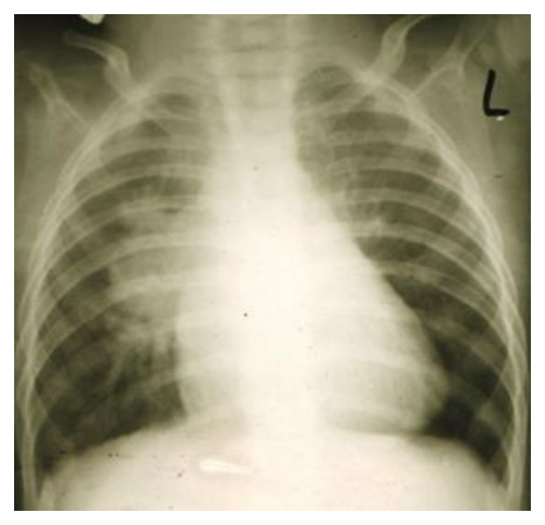
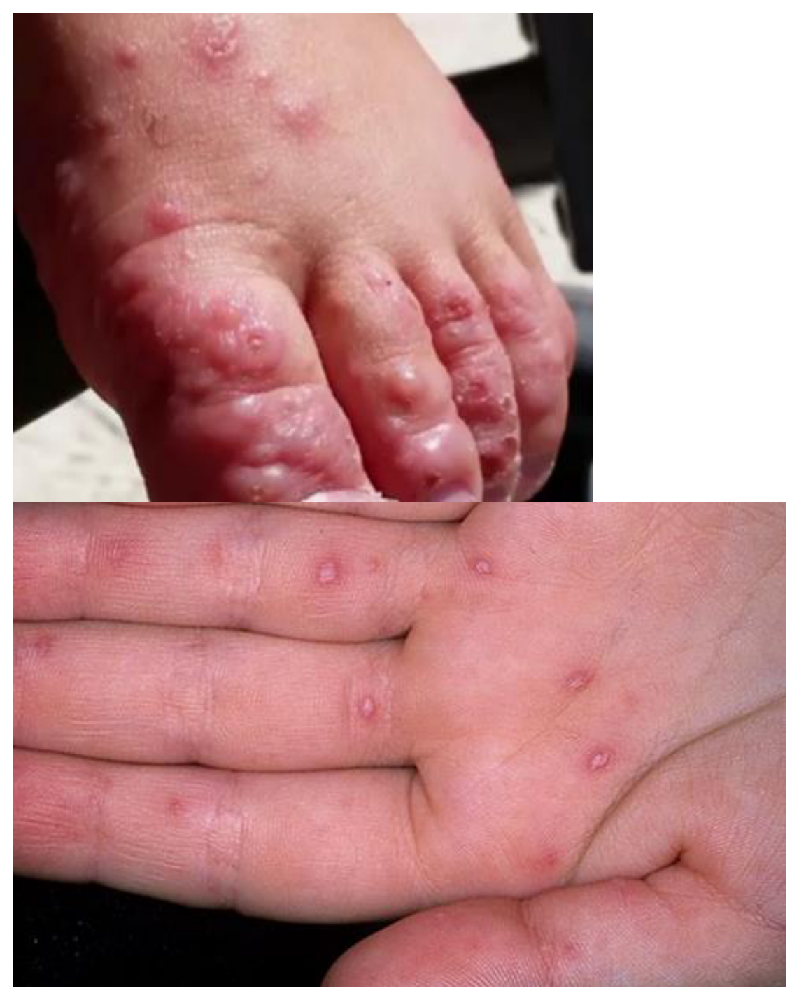
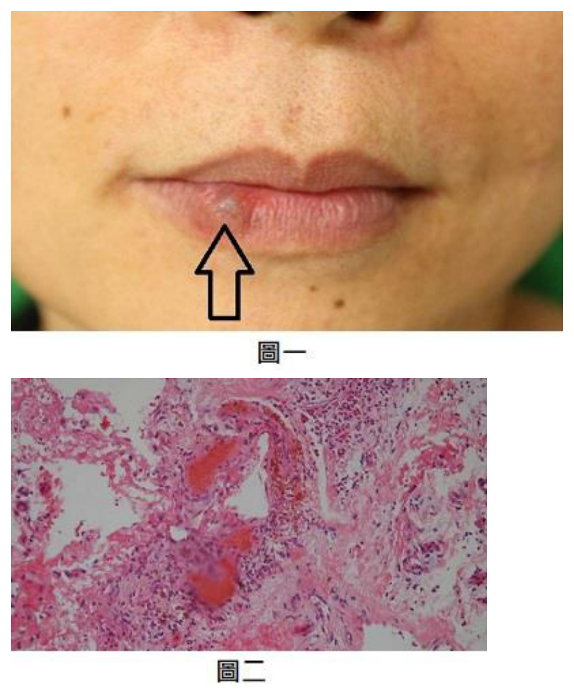
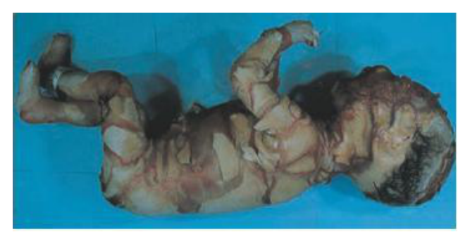
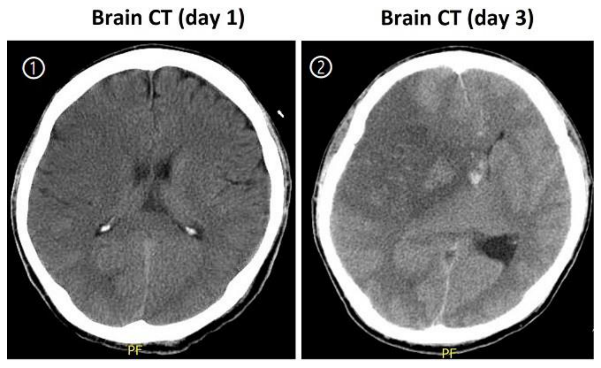
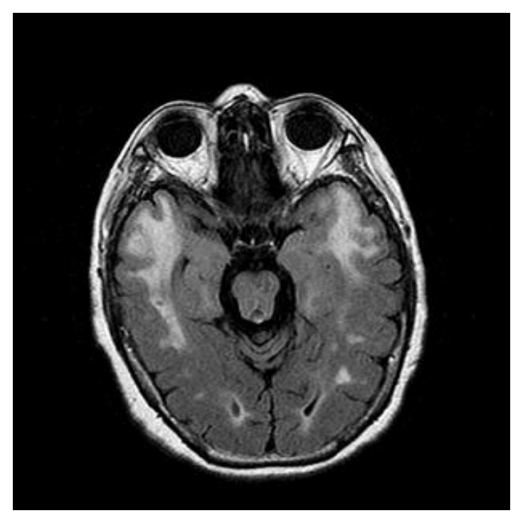
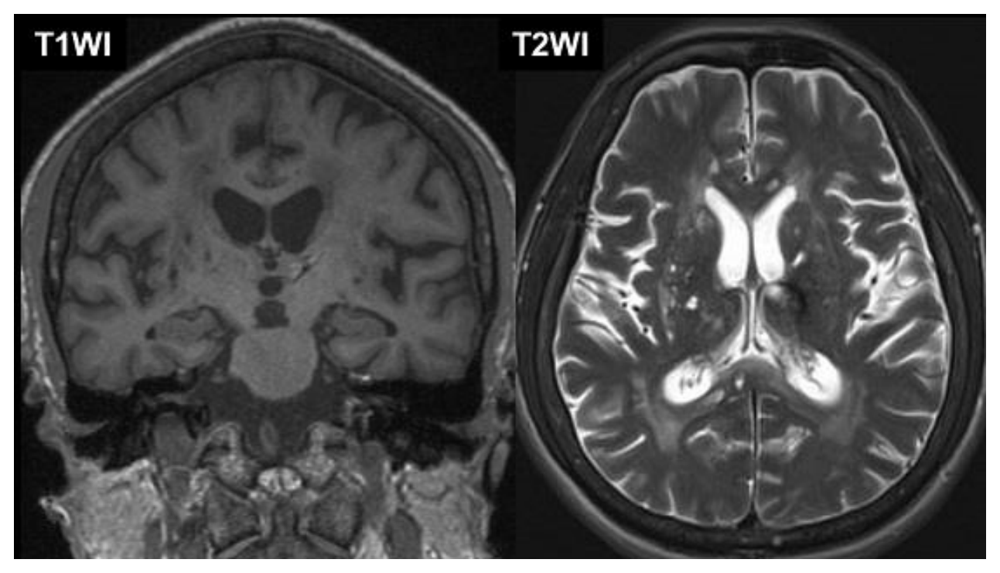

開卷有益 ／
醫師 ／ 醫學（四）（包括小兒科、皮膚科、神經科、精神科等科目及其相關臨床實例與醫學倫理） ／ 111 年第 2 次111 年第 2 次醫師醫學（四）（包括小兒科、皮膚科、神經科、精神科等科目及其相關臨床實例與醫學倫理）試題與答案
這一頁是民國 111 年第 2 次醫師醫學（四）（包括小兒科、皮膚科、神經科、精神科等科目及其相關臨床實例與醫學倫理）的整份歷屆試題，共 80 題，題目與標準答案出自考選部「國家考試試題及測驗式試題答案」開放資料，其中 80 題附有詳解。以下逐題列出題幹、選項與答案；要計時作答或記錄成績，請用線上練習。
考選部原始場次代碼：111080
線上作答這一科 →
全部 80 題
第 1 題
8 歲女孩，因突發高燒、頭痛、嘔吐及腹瀉而至急診求治，在急診因血壓下降而被轉到加護病房。其腦脊髓液檢查正常，血液 WBC 21,000/mm3（band: 3%, segment: 70%），CRP 12.7 mg/dL。身體診察發現左手臂有一大塊紅腫的區域，位於先前被蚊子叮咬而抓破皮的周圍，胸部、腹部有會癢的紅疹。此時最適當給與的抗生素為下列何者？
（A） Ampicillin（B） Oxacillin（C） Ampicillin + Gentamicin（D） Oxacillin + Clindamycin答案：（D）
詳解與考點 正解：高燒、低血壓、白血球與 CRP 上升，合併抓破蚊蟲叮咬處周圍大片紅腫，表示皮膚軟組織感染已伴隨全身毒性表現。oxacillin 可涵蓋常見甲氧西林敏感金黃色葡萄球菌與鏈球菌，clindamycin 兼具抑制毒素生成的作用，故選 D。
A：ampicillin 對常見產青黴素酶的金黃色葡萄球菌涵蓋不足，不能作為此嚴重皮膚軟組織感染的適當經驗治療。
B：oxacillin 雖能處理葡萄球菌，但本例有休克與可能毒素相關的嚴重感染表現；單用它看似合理，卻少了 clindamycin 的抗毒素輔助效果。
C：ampicillin 加 gentamicin 偏向特定革蘭陰性菌或腸球菌等情境，對本題由皮膚病灶推測的葡萄球菌、鏈球菌感染並非最佳組合。
本題考點：嚴重皮膚軟組織感染（severe skin and soft-tissue infection）；金黃色葡萄球菌（Staphylococcus aureus）；細菌毒素抑制（toxin suppression）。
第 2 題
貓抓病（Cat scratch disease）是下列何種細菌引起？
（A） Bartonella henselae（B） Brucella canis（C） Burkholderia cepacia（D） Bartonella quintana答案：（A）
詳解與考點 正解：貓抓病的典型病原是 Bartonella henselae，常在貓抓或咬後造成局部丘疹與區域淋巴結腫大，故選 A。
B：Brucella canis 與犬隻相關的人畜共通感染，並非貓抓病病原。
C：Burkholderia cepacia 是重要的院內或囊腫性纖維化相關病原，與貓抓病無關。
D：Bartonella quintana 同屬 Bartonella，容易成為誘答；其典型關聯是體蝨傳播的戰壕熱，而非貓抓病。
本題考點：貓抓病（cat scratch disease）；Bartonella henselae；人畜共通感染（zoonosis）。
第 3 題
8 個月大的女嬰高燒 3 天，除了發燒外有輕微鼻塞，第 4 天軀幹出現紅疹後不再發燒，關於此疾病下列何者錯誤？
（A） 最可能的診斷為嬰兒玫瑰疹（Roseola infantum）（B） 最主要的致病原為人類疱疹病毒第八型（HHV-8）（C） 在亞洲國家的病人，於 uvulopalatoglossal junction 處常可見 Nagayama spots（D） 熱性痙攣（Febrile convulsion）是可能的併發症答案：（B）
詳解與考點 正解：嬰兒高燒數日後退燒，隨即從軀幹出現紅疹，是嬰兒玫瑰疹的典型時序；其主要病原是人類疱疹病毒第六型，亦可為第七型，不是 HHV-8，故錯誤的是 B。
A：高燒後退燒出疹正是嬰兒玫瑰疹（roseola infantum）的典型臨床表現，敘述正確。
C：Nagayama spots 是軟顎與懸雍垂附近可見的紅色丘疹，為嬰兒玫瑰疹可見的口腔表現，敘述正確。
D：高熱期間可能發生熱性痙攣（febrile convulsion），是此病重要的臨床併發症，敘述正確。
本題考點：嬰兒玫瑰疹（roseola infantum）；人類疱疹病毒第六型（human herpesvirus 6, HHV-6）；退燒後出疹（defervescence rash）。
第 4 題
先天性梅毒（Congenital syphilis）的敘述，下列何者錯誤？
（A） 新生兒 Venereal Disease Research Laboratory（VDRL）陽性可確診為先天性梅毒感染（B） 垂直感染可發生在孕期的任何階段，可造成流產、早產、低體重胎兒之情形（C） 先天性梅毒早期症狀常見肝脾腫大、肝炎、黃疸；若未治療，晚期會侵犯中樞神經、骨關節（D） 治療先天性梅毒首選的抗生素是 Penicillin-G答案：（A）
詳解與考點 正解：新生兒 VDRL 陽性可能只是經胎盤取得母體的非梅毒螺旋體抗體，不能單憑一次陽性即確診先天性梅毒；必須合併母體治療史、嬰兒臨床與血清學追蹤判讀，故錯誤的是 A。
B：梅毒螺旋體可在妊娠不同階段造成垂直感染，與流產、早產及低出生體重等不良妊娠結果相關，敘述正確。
C：早期先天性梅毒可有肝脾腫大、肝炎與黃疸；未治療者日後可有神經與骨關節相關病變，敘述正確。
D：penicillin G 是治療先天性梅毒的首選抗生素，敘述正確。
本題考點：先天性梅毒（congenital syphilis）；非梅毒螺旋體試驗（nontreponemal test）；被動移轉母體抗體（passive maternal antibody transfer）。
第 5 題
新生兒維持正常體溫而氧氣消耗量最少的環境溫度叫中性環境溫度（neutral thermal environment）。下列何者不會影響中性環境溫度的調控？
（A） 環境對流作用（Convection）（B） 環境相對濕度（Relative humidity）（C） 新生兒出生週數（Gestational age）（D） 新生兒餵食量（Feeding amount）答案：（D）
詳解與考點 正解：中性環境溫度是讓新生兒以最少氧氣消耗維持體溫的環境條件，取決於熱散失與個體成熟度；餵食量不直接決定環境熱調控設定，故選 D。
A：對流（convection）會隨氣流與環境溫差增加而帶走熱量，會影響所需的環境溫度。
B：相對濕度（relative humidity）影響蒸發性熱散失，尤其早產兒皮膚屏障較不成熟時更重要。
C：胎齡（gestational age）反映體表面積、皮膚成熟度與保溫能力，早產兒所需中性環境溫度通常較高。
本題考點：中性環境溫度（neutral thermal environment）；新生兒熱散失（neonatal heat loss）；對流（convection）與蒸發（evaporation）。
第 6 題
一個新生兒外觀異常，有低位耳（low-set ears）、上顎裂（midline facial clefts）與下頜骨發育異常（hypomandibular abnormalities），並因為低血鈣（hypocalcemia）而引發肌肉強直性痙攣（tetany），最可能的診斷為：
（A） Turner syndrome（B） DiGeorge syndrome（C） Wiskott-Aldrich syndrome（D） Noonan syndrome答案：（B）
詳解與考點 正解：異常顏面與低位耳合併低血鈣性手足搐搦，提示咽囊發育異常造成副甲狀腺低下，最符合 DiGeorge syndrome，故選 B。
A：Turner syndrome 常見於女性，典型為性腺發育不全、頸蹼與身材矮小，不能解釋本例副甲狀腺相關低血鈣。
C：Wiskott-Aldrich syndrome 的核心為濕疹、血小板低下與免疫缺陷，非顏面異常合併低血鈣。
D：Noonan syndrome 可有特殊顏面與心臟病，但低血鈣性 tetany 並非其典型組合。
本題考點：DiGeorge syndrome；第三、四咽囊發育異常（pharyngeal pouch developmental defect）；副甲狀腺低下（hypoparathyroidism）。
第 7 題
剛出生的男嬰，出生後不久隨即發現口鼻冒泡泡，餵食時容易嗆奶、咳嗽、喘，甚至會發紺，放置口胃管時，有阻力而無法順利完成，最有可能的診斷為何？
（A） 先天性橫膈膜疝氣（congenital diaphragmatic hernia）（B） 食道閉鎖（esophageal atresia）（C） 後鼻孔閉鎖（choanal atresia）（D） 喉頭軟化症（laryngomalacia）答案：（B）
詳解與考點 正解：出生即口鼻冒泡、餵食嗆咳發紺，且口胃管無法通過，是食道閉鎖（esophageal atresia）的典型線索，常可合併氣管食道瘻管，故選 B。
A：先天性橫膈膜疝氣以嚴重呼吸窘迫、腹部凹陷及胸腔腸音為主，不能解釋口胃管遇阻。
C：後鼻孔閉鎖會使新生兒鼻塞、發紺，哭泣時可改善，但不會造成口胃管無法進入胃部。
D：喉頭軟化症常為吸氣性喘鳴，症狀可於餵食或仰臥加重，卻不會造成無法置入胃管。
本題考點：食道閉鎖（esophageal atresia）；氣管食道瘻管（tracheoesophageal fistula）；新生兒餵食性發紺（feeding-associated cyanosis）。
第 8 題
有關懷孕週數 40 週新生兒的身體診察，下列何者最為異常？
（A） 體重 3.3 公斤（B） 身長 50 公分（C） 頭圍 38 公分（D） 體溫 36.8℃答案：（C）
詳解與考點 正解：40 週足月新生兒的體重 3.3 公斤、身長 50 公分與體溫 36.8℃皆在常見範圍；頭圍 38 公分則偏大，應考慮巨頭症或需進一步評估，故選 C。
A：足月新生兒體重 3.3 公斤屬常見範圍，並非最異常。
B：足月新生兒身長約 50 公分常見，與題目胎齡相稱。
D：36.8℃在新生兒正常體溫範圍內，不能作為異常判斷。
本題考點：足月新生兒身體測量（term newborn anthropometry）；頭圍（head circumference）；巨頭症（macrocephaly）。
第 9 題
下列何種狀況最不易見到急性膽囊水腫（Acute hydrops of the gallbladder）？
（A） 川崎氏病（Kawasaki disease）（B） 囊腫性纖維化（Cystic fibrosis）（C） 病毒性肝炎（Viral hepatitis）（D） 沙門氏菌敗血症（Salmonellosis）答案：（B）
詳解與考點 正解：兒童急性膽囊水腫常與全身性發炎、感染或膽汁鬱積相關；川崎氏病、病毒性肝炎與沙門氏菌感染均可見此併發症。囊腫性纖維化較典型的肝膽表現是濃稠膽汁、膽泥或膽管病變，不是最常見的急性膽囊水腫關聯，故選 B。
A：川崎氏病可因全身性血管炎與發炎反應出現膽囊水腫，敘述並非最不易見到。
C：病毒性肝炎的肝膽發炎可伴隨膽囊壁水腫或膽囊水腫，與本題情境相符。
D：沙門氏菌感染可侵犯膽道或造成全身性發炎，亦是兒科急性膽囊水腫的已知關聯。
本題考點：急性膽囊水腫（acute hydrops of the gallbladder）；川崎氏病（Kawasaki disease）；兒童肝膽併發症（pediatric hepatobiliary complications）。
第 10 題
15 歲女童，每當感冒或月經來潮時，就會出現輕微黃疸，其總膽紅素（bilirubin）介於 3～5 mg/dL，屬間接型。無溶血現象，其餘肝功能檢查都正常，約 5 天就緩解。最可能的疾病是：
（A） Wilson's disease（B） Gilbert syndrome（C） Dubin-Johnson syndrome（D） Autoimmune hepatitis答案：（B）
詳解與考點 正解：感冒或月經等壓力情境誘發、短暫反覆的輕度非結合型高膽紅素血症，且無溶血與其他肝功能異常，是 Gilbert syndrome 的典型表現，故選 B。
A：Wilson's disease 可造成肝病、神經精神症狀或溶血，並非僅在壓力時短暫出現孤立性間接膽紅素上升。
C：Dubin-Johnson syndrome 為結合型高膽紅素血症；它看似同為良性遺傳性黃疸，卻與本題的間接型膽紅素不符。
D：autoimmune hepatitis 通常伴隨肝炎相關肝功能異常，不會呈現數日自行緩解的孤立性間接型黃疸。
本題考點：Gilbert syndrome；非結合型高膽紅素血症（unconjugated hyperbilirubinemia）；UGT1A1 活性下降（reduced UGT1A1 activity）。
第 11 題
下列有關先天性巨結腸症（Hirschsprung disease）的敘述，何者錯誤？
（A） 直腸內壓測定（anorectal manometry）時肛門括約肌壓力下降（B） 直腸指診時會有爆發式排泄（explosive stools）的情形（C） 可用直腸組織切片（rectal biopsy）來做為輔助診斷的工具（D） 鋇劑灌腸檢查（barium enema examination）可見病變處狹窄答案：（A）
詳解與考點 正解：先天性巨結腸症缺乏腸壁神經節細胞，使內肛門括約肌無法正常鬆弛；直腸肛門壓力測定會見到直腸肛門抑制反射缺失，而非括約肌壓力下降，故錯誤的是 A。
B：直腸指診後可因近端堆積糞便與氣體突然排出而有爆發式排泄，是典型線索。
C：直腸組織切片可證明缺乏神經節細胞，是確立診斷的重要工具。
D：鋇劑灌腸可見遠端狹窄的無神經節腸段與近端擴張形成過渡區，敘述正確。
本題考點：先天性巨結腸症（Hirschsprung disease）；直腸肛門抑制反射（rectoanal inhibitory reflex, RAIR）；無神經節症（aganglionosis）。
第 12 題
8 歲女童一個月前皮膚出現化膿性感染，這兩天尿液變少、雙側眼皮水腫。血壓 115/80 mmHg、心跳每分鐘 85次、呼吸每分鐘 22 次。血中白血球數為 12,000/mm3、血色素 9.6 g/dL、血小板 280,000/mm3。尿液檢查顯示 OB3+、RBC 35～50/HPF、WBC 5～10/HPF、尿蛋白 100 mg/dL。下列何者為最可能的診斷？
（A） 急性腎盂腎炎（Acute pyelonephritis）（B） 急性鏈球菌感染後腎絲球腎炎（Acute poststreptococcal glomerulonephritis）（C） 急性溶血症（Acute hemolytic syndrome）（D） 腎病症候群（Nephrotic syndrome）答案：（B）
詳解與考點 正解：皮膚化膿感染約一個月後，出現少尿、眼瞼水腫、血尿與蛋白尿，符合鏈球菌感染後造成的腎絲球腎炎症候群，故選 B。
A：急性腎盂腎炎通常以發燒、腰痛、膿尿與細菌尿為主，不能由先前皮膚感染加上明顯血尿與水腫來解釋。
C：急性溶血症候群若伴腎損傷常見血小板低下與溶血性貧血；本題血小板正常，且感染後腎炎的時序更吻合。
D：腎病症候群以大量蛋白尿、低白蛋白與全身水腫為主，血尿通常不是此例的突出表現。
本題考點：急性鏈球菌感染後腎絲球腎炎（acute poststreptococcal glomerulonephritis）；腎炎症候群（nephritic syndrome）；感染後免疫複合體反應（postinfectious immune-complex reaction）。
第 13 題
有關兒童腎病症候群（Idiopathic nephrotic syndrome）的敘述，下列何者錯誤？
（A） 尿中蛋白大量流失（Nephrotic-range proteinuria）（B） 血管內滲透壓減低（Decrease intravascular oncotic pressure）（C） 病童會出現高血脂（Hyperlipidemia）的現象（D） 血液不易凝固（Hypocoagulability）的狀態答案：（D）
詳解與考點 正解：腎病症候群大量流失尿蛋白，也會流失抗凝血相關蛋白，並促進凝血因子增加，整體傾向血栓形成而非低凝血性，故錯誤的是 D。
A：大量蛋白尿（nephrotic-range proteinuria）是腎病症候群的核心診斷特徵，敘述正確。
B：白蛋白流失使血管內膠體滲透壓下降，造成液體移至組織間隙並形成水腫，敘述正確。
C：肝臟對低白蛋白狀態增加脂蛋白生成，常出現高血脂（hyperlipidemia），敘述正確。
本題考點：腎病症候群（nephrotic syndrome）；血管內膠體滲透壓（intravascular oncotic pressure）；高凝狀態（hypercoagulability）。
第 14 題
10 歲男童有癲癇病史，長期使用抗癲癇藥物控制。出現全身性強直陣攣發作送到急診，抽血檢驗發現，[Na+]＝140 mEq/L， [K+]＝4.0 mEq/L， [Cl-]＝98 mEq/L，動脈血液氣體分析為 pH＝7.14，PaCO2＝46 mmHg，[HCO3-]＝17 mEq/L。有關此病人的敘述，下列何者錯誤？
（A） 代謝性酸中毒（Metabolic acidosis）合併呼吸性酸中毒（respiratory acidosis）（B） 低陰離子間隙（Low anion gap）（C） 治療包括控制癲癇及呼吸支持（D） 此代謝性酸中毒（Metabolic acidosis）可能因癲癇發作而引起答案：（B）
詳解與考點 正解：酸鹼數值的交叉判讀。陰離子間隙＝Na－（Cl+HCO3）＝140－（98+17）＝25 mEq/L，屬升高而非降低；因此錯誤的是 B。另以 Winter 公式估算代謝性酸中毒的預期 PaCO2:1.5×17+8=33.5 mmHg，容許範圍約 31.5～35.5 mmHg，實測 46 mmHg，亦合併呼吸性酸中毒。
A：HCO3 17 mEq/L 與 pH 7.14 支持代謝性酸中毒，而 PaCO2 46 mmHg 高於代償預期，表示另有呼吸性酸中毒，敘述正確。
C：急救處置需終止癲癇發作並維持通氣與氧合；呼吸支持可處理合併的通氣不足，敘述正確。
D：全身性強直陣攣發作可因乳酸累積造成高陰離子間隙代謝性酸中毒，敘述正確。
本題考點：陰離子間隙（anion gap）；混合性酸鹼障礙（mixed acid-base disorder）；Winter 公式（Winter's formula）。
第 15 題
有關腸病毒（Enterovirus）重症的敘述，下列何者錯誤？
（A） 重症病人常會脫水故需大量給與輸液補充（B） 未滿 5 歲兒童居多（C） 腸病毒 71 型為腦幹脊髓炎（Rhombencephalitis）之主要病原之一（D） 頻繁的肌跳躍（Myoclonic jerks）是重症前兆答案：（A）
詳解與考點 正解：腸病毒重症可有自律神經失調、肺水腫與心肺衰竭風險，輸液需審慎評估，不可因病人可能脫水就大量補液，以免加重肺水腫，故錯誤的是 A。
B：腸病毒重症多見於未滿 5 歲兒童，敘述正確。
C：腸病毒 71 型是腦幹腦炎或菱腦炎（rhombencephalitis）的重要病原之一，敘述正確。
D：頻繁肌跳躍（myoclonic jerks）可作為腸病毒重症的警訊，應密切觀察是否出現神經與心肺惡化，敘述正確。
本題考點：腸病毒重症（severe enterovirus infection）；自律神經失調（autonomic dysregulation）；肺水腫（pulmonary edema）。
第 16 題
5 歲男童早上醒來後，發覺他兩腳無法走路，急診檢查時發現體溫為 38.5℃且血清中 Creatine kinase（CK）比正常值高 20 倍，下列何種疾病為最有可能之診斷？
（A） Acute myositis（B） Acute transverse myelitis（C） Myasthenia gravis（D） Guillian-Barré syndrome答案：（A）
詳解與考點 正解：醒來後無法行走、發燒及 CK 高達正常值 20 倍，表示主要病灶在骨骼肌；急性肌炎（acute myositis）最符合，故選 A。兒童病毒性肌炎常可見雙側小腿痛或感染後發作，但這些是一般典型表現，並非本例題幹已提供的事實。
B：急性橫斷性脊髓炎可造成無力與步行障礙，但通常伴感覺平面、膀胱腸道症狀或上運動神經元徵象，且不會使 CK 顯著升高。
C：重症肌無力是神經肌肉接點疾病，會有易疲勞性無力，但 CK 通常正常，亦不符合急性發燒後肌肉酵素大幅升高。
D：Guillain-Barré syndrome 可在感染後出現雙下肢無力，因此看似接近；但其典型為腱反射減弱的周邊神經病變，CK 不會升至正常值 20 倍。
本題考點：急性病毒性肌炎（acute viral myositis）；肌酸激酶（creatine kinase, CK）；感染後神經肌肉鑑別診斷（postinfectious neuromuscular differential diagnosis）。
第 17 題
13 歲男孩，自述 4 週前有輕微腹瀉，最近 2 週內有進行性的四肢無力和感覺異常，神經學診查發現四肢深部肌腱反射（Deep tendon reflexes）減弱，腦部和脊椎磁振造影掃描無特殊異常，腦脊髓液檢查報告如下：WBC：0 cell/mm3，RBC：0 cell/mm3，glucose：80 mg/dL，protein：105 mg/dL。此病人最可能的診斷為何？
（A） Poliomyelitis（B） Acute inflammatory demyelinating polyradiculoneuropathy（C） Myasthenia gravis（D） Viral myositis答案：（B）
詳解與考點 正解：腹瀉後的進行性四肢無力、腱反射減弱，以及腦脊髓液蛋白升高而白血球為 0 cell/mm3。這是急性發炎性脫髓鞘性多發性神經根病變（acute inflammatory demyelinating polyradiculoneuropathy, AIDP），即 Guillain-Barré syndrome 的典型表現；感染後免疫反應攻擊周邊神經與神經根，造成上行性無力與腱反射低下。腦脊髓液呈蛋白—細胞分離（albuminocytologic dissociation），故選 B。
A：polio 可造成急性弛緩性麻痺，但常為不對稱的運動神經元病變，且腦脊髓液通常可見細胞增加；與本題感染後對稱進行性症狀及蛋白—細胞分離不符。
C：myasthenia gravis 的問題在神經肌肉接合處，典型為易疲勞的眼肌、延髓或肢體無力，感覺通常正常，深部肌腱反射也多保留，不能解釋本題感覺異常與腦脊髓液結果。
D：viral myositis 主要造成肌痛、肌無力與肌肉酵素上升，反射可能受疼痛影響卻不以感覺異常及神經根病變型腦脊髓液為特徵。
本題考點：Guillain-Barré syndrome/AIDP 是常見感染後周邊神經免疫疾病；蛋白—細胞分離（albuminocytologic dissociation）支持其診斷；周邊神經病變常見腱反射減弱與感覺症狀。
第 18 題
有關新生兒的身體診察，下列敘述何者錯誤？
（A） Moro reflex 若兩手臂呈不對稱伸張，要考慮是否有臂神經叢受損（Brachial plexus injury）（B） 在頭部摸到一軟而有波動之腫塊，且越過骨縫，此為胎頭血腫（Cephalohematoma）（C） 出生後第 3 天身體軀幹出現毒性紅斑（Erythema toxicum）此為正常現象（D） 身體中線兩側的皮膚呈現半紅半白(Harlequin color change)，係屬暫時性的，無任何意義答案：（B）
詳解與考點 正解：「越過骨縫」的頭部軟性波動腫塊。可跨越骨縫的是產瘤（caput succedaneum）或較廣泛的頭皮下出血；胎頭血腫（cephalohematoma）位於骨膜下，受骨膜附著限制，不能跨越骨縫。因此（B）把可跨骨縫的表現稱為胎頭血腫，敘述錯誤，故選 B。
A：Moro reflex 不對稱時，應考慮鎖骨骨折或臂神經叢受損等單側上肢問題；以臂神經叢受損作為鑑別方向正確。
C：新生兒毒性紅斑（erythema toxicum）常在出生後數日出現，屬良性、自限性的常見皮疹，並不表示感染。
D：Harlequin color change 是暫時性的皮膚血管反應，常呈身體一側發紅、另一側蒼白，健康新生兒可見，通常無病理意義。
本題考點：新生兒頭皮腫塊的解剖層次（neonatal scalp swelling）決定是否跨骨縫；產瘤（caput succedaneum）可跨骨縫，胎頭血腫（cephalohematoma）局限於單一顱骨。
第 19 題
新生兒一再發生低血糖（hypoglycemia），當血糖低至 40 mg/dL 時所做的實驗室檢查結果，其中何者不支持高胰島素症（hyperinsulinism）的診斷？
（A） 血清胰島素（insulin）值為 10 μU/mL（正常範圍 5～15 μU/mL）（B） 血漿游離脂肪酸濃度（free fatty acid level）低（C） 血漿酮體（ketone body）為 3.0 mmol/L（正常值＜0.6 mmol/L）（D） 1 mg 升糖素（glucagon）靜脈注射後，病人血糖值為 90 mg/dL答案：（C）
詳解與考點 正解：低血糖發作當下要判斷是否為高胰島素症（hyperinsulinism）。胰島素會抑制脂解與酮體生成，因此高胰島素性低血糖應有低游離脂肪酸與低酮體；反而（C）的酮體為 3.0 mmol/L，明顯高於題示正常值＜0.6 mmol/L，表示脂肪分解與酮體生成未被充分抑制，不支持此診斷，故選 C。
A：低血糖時胰島素本應被壓低；即使數值落在一般正常範圍，血糖 40 mg/dL 時仍測得 10 μU/mL 屬不恰當地未受抑制，支持高胰島素症。
B：高胰島素會抑制脂肪組織釋出游離脂肪酸，故低游離脂肪酸符合高胰島素性低血糖。
D：升糖素可動員肝醣；低血糖時注射後血糖能升至 90 mg/dL，顯示肝醣儲存仍在且先前受胰島素抑制，為支持線索。
本題考點：高胰島素性低血糖（hyperinsulinemic hypoglycemia）會抑制脂解（lipolysis）與酮體生成（ketogenesis）；判讀應以低血糖當下的胰島素、游離脂肪酸、酮體及對 glucagon 的反應為準。
第 20 題
男童青春期第二性徵的發育，下列何項變化最晚出現？
（A） 陰莖變長（growth of penis）（B） 睪丸變大（enlargement of testes）（C） 生長衝刺（growth spurt）（D） 陰毛發育（development of pubic hair）答案：（C）
詳解與考點 正解：男童青春期各事件的先後順序。青春期最早且最可靠的外觀起點是睪丸變大，接著有陰毛發育與陰莖生長；男童的生長衝刺通常發生在性成熟較後段，晚於這些初始第二性徵。因此最晚出現的是（C）生長衝刺，故選 C。
A：陰莖變長是睪丸增大後的青春期生殖器發育變化，出現時間早於身高快速成長的高峰。
B：睪丸變大反映下視丘—腦下垂體—性腺軸啟動，是男童青春期最早可辨認的第二性徵，並非最晚。
D：陰毛發育受腎上腺雄性素及性腺雄性素影響，雖個別差異存在，通常早於男童生長衝刺的高峰。
本題考點：男童青春期（male puberty）的典型序列以睪丸增大（testicular enlargement）為先；陰莖與陰毛發育隨後；生長衝刺（growth spurt）較晚出現。
第 21 題
6 個月大的男童，皮膚和臟器反覆出現膿瘍，且合併發生骨髓炎（osteomyelitis）、全身性濕疹（eczema），最有可能是下列那一種先天性免疫缺損問題？
（A） T 淋巴球免疫缺乏（T cells immunodeficiency）（B） 自然殺手細胞免疫缺乏（natural killer cells immunodeficiency）（C） 補體免疫缺乏（complement deficiency）（D） 吞噬細胞趨化性缺陷（phagocyte chemotaxis defect）答案：（D）
詳解與考點 正解：嬰兒期反覆皮膚與臟器膿瘍、骨髓炎及濕疹，感染型態以化膿性細菌感染為主。吞噬細胞須靠趨化作用移動至感染處並清除病原；其趨化缺陷會使中性球無法有效抵達組織，造成反覆深部膿瘍與骨髓炎，故選 D。
A：T 細胞免疫缺乏較易出現病毒、真菌或伺機性感染，雖也可能有嚴重感染，但不是反覆化膿性膿瘍與骨髓炎最具代表性的缺陷。
B：自然殺手細胞主要參與對病毒感染與部分腫瘤細胞的先天性防禦，不能優先解釋本題的反覆細菌性膿瘍。
C：補體缺乏常與特定莢膜菌感染、尤其 Neisseria 感染傾向相關；看似同樣會反覆細菌感染，但典型感染譜不同於本題的膿瘍與骨髓炎。
本題考點：吞噬細胞功能缺陷（phagocyte defects）會導致反覆化膿性細菌感染；趨化作用（chemotaxis）是中性球到達感染部位的關鍵；深部膿瘍與骨髓炎是重要臨床線索。
第 22 題
下呼吸道阻塞，最不會出現下列那一項徵候？
（A） Intercostal retraction（B） Wheezing（C） Stridor（D） Tachypnea答案：（C）
詳解與考點 正解：「下呼吸道」阻塞。下呼吸道的小氣道狹窄會使呼氣氣流受限，典型聽診音是 wheezing；嚴重阻塞也會造成呼吸功增加而有呼吸急促與胸壁凹陷。stridor 則主要是上呼吸道、尤其喉部或氣管近端狹窄的高調吸氣聲，因此最不會出現的是（C），故選 C。
A：intercostal retraction 反映呼吸功增加與胸腔內負壓變大；下呼吸道阻塞嚴重時可以出現。
B：wheezing 是氣流通過狹窄支氣管或細支氣管產生的連續性音，正是下呼吸道阻塞的代表性徵候。
D：tachypnea 是呼吸窘迫的常見代償表現，可伴隨下呼吸道阻塞。
本題考點：呼吸音定位（respiratory sound localization）中，wheezing 指向下呼吸道狹窄；stridor 指向上呼吸道阻塞；胸凹與呼吸急促則反映呼吸窘迫（respiratory distress）。
第 23 題
有關幼年特發性關節炎（Juvenile idiopathic arthritis, JIA），下列敘述何者錯誤？
（A） 不管是診斷那一種亞型的 JIA，一定要有關節炎，才能下診斷（B） JIA 之診斷主要是靠臨床診斷，所有的實驗室檢查都只是幫助診斷及預後參考之用（C） 多關節亞型（Polyarthritis）的患者，會有較高比例合併葡萄膜炎（Uveitis）（D） ANA 陽性在少關節亞型（Oligoarthritis）的比例，較其他亞型為高答案：（C）
詳解與考點 正解：JIA 各亞型的葡萄膜炎風險。慢性前葡萄膜炎較常見於 ANA 陽性的少關節型（oligoarthritis）JIA，而不是以多關節型為最高比例。因此（C）把較高比例合併葡萄膜炎歸給多關節亞型，敘述錯誤，故選 C。
A：JIA 是以持續性關節炎為核心的臨床診斷；各亞型雖有不同的關節數、全身表徵或乾癬相關特徵，仍須先有關節炎。
B：JIA 沒有單一可確診的實驗室檢查，檢驗主要用於協助分類、評估發炎或預後並排除其他疾病，敘述正確。
D：ANA 陽性較常見於少關節型 JIA，且是慢性葡萄膜炎風險的重要分層線索，敘述正確。
本題考點：幼年特發性關節炎（juvenile idiopathic arthritis, JIA）以臨床關節炎為診斷核心；少關節型與 ANA 陽性（antinuclear antibody positivity）和慢性前葡萄膜炎（anterior uveitis）關聯較強。
第 24 題
有關異位性皮膚炎（Atopic dermatitis）的敘述，下列何者錯誤？
（A） 異位性皮膚炎診斷之依據包括皮疹是否呈現典型分布以及是否有慢性、復發性癢疹（B） 第一代口服抗組織胺可能會導致嗜睡，因此考慮夜間睡前使用（C） 異位性皮膚炎病童皮膚傷口最常會受到鏈球菌感染，發生時可使用局部抗生素治療（D） 異位性皮膚炎如果使用局部型類固醇效果不好者，可考慮使用 topical calcineurin inhibitors 來治療答案：（C）
詳解與考點 正解：異位性皮膚炎傷口的常見細菌感染。異位性皮膚炎皮膚屏障受損，最常見的細菌定植與繼發感染為金黃色葡萄球菌（Staphylococcus aureus），不是鏈球菌；因此（C）的病原判斷錯誤，故選 C。局部抗生素是否適合仍須依感染範圍與嚴重度判斷，不能因濕疹本身常規使用。
A：典型部位分布、搔癢及慢性復發病程都是異位性皮膚炎的核心臨床診斷線索。
B：第一代口服抗組織胺的鎮靜效果不能直接治療皮膚發炎，但若夜間搔癢影響睡眠，睡前使用可利用其嗜睡副作用改善睡眠。
D：局部鈣調神經磷酸酶抑制劑（topical calcineurin inhibitors）可作為局部類固醇反應不足、需減少類固醇暴露或敏感部位治療的選項。
本題考點：異位性皮膚炎（atopic dermatitis）的特徵是搔癢、慢性復發與典型分布；皮膚屏障缺陷增加金黃色葡萄球菌（Staphylococcus aureus）定植與感染；局部鈣調神經磷酸酶抑制劑（topical calcineurin inhibitors）是非類固醇抗發炎治療。
第 25 題
10 個月大的男童，最近 3 個月內反覆發生中耳炎及細菌性肺炎，但之前健康情形尚稱良好。病童有一個哥哥於 9 個月大時，因敗血症過世。身體診察發現無扁桃腺（Tonsils），血中 IgG＜200 mg/dL、IgA＜5 mg/dL、IgM＜100 mg/dL，此男童最可能的診斷為何？
（A） 嬰兒暫時性低免疫球蛋白血症（Transient hypogammaglobulinemia of infancy）（B） 選擇性 IgA 缺乏症（Selective IgA deficiency）（C） 嚴重合併性免疫缺乏症（Severe combined immunodeficiency）（D） Bruton 氏免疫球蛋白缺乏症（Bruton agammaglobulinemia）答案：（D）
詳解與考點 正解：男嬰於母體抗體逐漸消退後反覆細菌感染、沒有扁桃腺，且 IgG、IgA、IgM 都很低，加上同胞早期死亡的家族史。這符合 X 連鎖的 Bruton agammaglobulinemia：B 細胞成熟受阻，周邊淋巴組織不發達並缺乏各類免疫球蛋白，故選 D。
A：嬰兒暫時性低免疫球蛋白血症主要是 IgG 下降，B 細胞存在，也不會典型地造成扁桃腺缺如與所有主要免疫球蛋白皆顯著低下。
B：選擇性 IgA 缺乏症以 IgA 缺乏為主，IgG 與 IgM 通常正常，與本題全體液性免疫球蛋白低下不符。
C：嚴重合併性免疫缺乏症通常在更早期即有嚴重、反覆且多類型感染，常包含伺機性感染；本題的無扁桃腺與純體液性缺陷表現更指向 Bruton disease。
本題考點：Bruton agammaglobulinemia/X-linked agammaglobulinemia 是 B 細胞成熟缺陷；母體 IgG 消退後出現反覆細菌感染；扁桃腺缺如與各類免疫球蛋白低下是關鍵線索。
第 26 題
唐氏症（Down syndrome）兒童最常罹患下列何種白血病 ?
（A） T-cell acute lymphoblastic leukemia（T-ALL）（B） B-cell acute lymphoblastic leukemia（B-ALL）（C） Acute myelogenous leukemia（AML）（D） Chronic myelogenous leukemia（CML）答案：（C）
詳解與考點 正解：官方答案為 C；惟題幹未限定年齡，使答案具有爭議。唐氏症在幼兒期，尤其急性巨核細胞性白血病的風險顯著升高，故可支持 AML 是重要聯想；但整體唐氏症兒童急性白血病的病例中，ALL 常占較多數，不能以 AML 的相對風險最高推論其在所有年齡均最常見。
A：T-ALL 常見於較大兒童或青少年，與唐氏症的特異性關聯不如 AML。
B：B-ALL 在唐氏症兒童亦可發生且風險增加，整體急性白血病病例中 ALL 常較多；因此若題幹不限定年齡或統計口徑，B 是合理的競爭選項。
D：CML 是以 BCR::ABL1 融合基因為特徵的慢性骨髓增生性腫瘤，並非唐氏症兒童最具代表性的白血病。
本題考點：唐氏症（Down syndrome）與急性白血病（acute leukemia）風險上升相關；急性骨髓性白血病（AML）特別是巨核細胞分化異常，是重要兒科聯想；盛行率（prevalence）與相對風險（relative risk）須區分年齡和統計口徑。
第 27 題
發生嗜中性球低下發燒（Febrile neutropenia）時，有關 Vancomycin 的給與時機及方式，下列何者較不恰當？
（A） 休克時使用 Vancomycin，應加快靜脈輸注速率（輸注時間小於 10 分鐘）（B） 如果有明顯的導管相關感染，應給與 Vancomycin（C） 如果過去有 Methicillin-resistant 金黃色葡萄球菌 （Staphylococcus aureus）菌落形成 （colonization）的病史，應給與 Vancomycin（D） 如果病人有嚴重的口腔黏膜炎（Mucositis），且已使用 quinolone 類藥物做預防性抗生素，仍應給與Vancomycin答案：（A）
詳解與考點 正解：嗜中性球低下發燒時 vancomycin 的「輸注方式」。vancomycin 不應為求休克處置而在小於 10 分鐘內快速靜脈輸注；過快輸注會增加輸注相關反應與血流動力學不穩的風險，應依安全輸注原則給藥。因此此作法最不恰當，故選 A。
B：明顯導管相關感染時需涵蓋可能的革蘭氏陽性菌，包含耐甲氧西林葡萄球菌，使用 vancomycin 有其適應情境。
C：既往有 MRSA colonization 是經驗性考慮加入 vancomycin 的風險線索之一，不是任意常規加藥。
D：嚴重口腔黏膜炎合併先前 quinolone 預防會提高 viridans streptococci 等感染風險；僅在既有經驗性方案對相關革蘭氏陽性菌涵蓋不足等特定情況才考慮加入 vancomycin。若已使用 cefepime、piperacillin-tazobactam 或 carbapenem 等方案，不宜只憑這兩項條件常規加藥。
本題考點：嗜中性球低下發燒（febrile neutropenia）的經驗性抗生素需依感染線索調整；vancomycin 用於特定革蘭氏陽性菌高風險情境；安全靜脈輸注（intravenous infusion）不可因休克而任意加速。
第 28 題
有關川崎氏病（Kawasaki disease）的敘述，除了持續發高燒超過 5 天外，亦須出現主要臨床準據（principalclinical criteria），以符合診斷，但下列何者錯誤？
（A） 出現不同型態的皮疹，廣泛分布於四肢和軀幹（B） 一週內會出現皮膚脫屑，特別是指尖周圍（C） 兩眼結膜充血，或口腔黏膜變化，如草莓舌或嘴唇紅裂甚至出血（D） 急性非化膿性頸淋巴結腫大，單側或雙側，直徑至少 1.5 公分答案：（B）
詳解與考點 正解：川崎氏病的「主要臨床準據」與發病時序。急性期的主要準據包括多形性皮疹、雙側非化膿性結膜炎、口腔黏膜變化及頸部淋巴結腫大；指尖周圍脫屑則通常出現在較後的亞急性期，而非一週內的急性期主要準據。因此（B）敘述錯誤，故選 B。
A：廣泛分布於軀幹與四肢的多形性皮疹是川崎氏病主要臨床準據之一。
C：雙側非化膿性結膜充血及草莓舌、口唇紅裂等口腔黏膜變化，都是主要臨床準據。
D：急性非化膿性頸部淋巴結腫大可為單側或雙側，達題述大小時符合主要臨床準據之一。
本題考點：川崎氏病（Kawasaki disease）以持續發燒與主要臨床準據診斷；急性期可見結膜炎、口腔變化、皮疹、四肢變化與頸部淋巴結腫大；指尖脫屑（periungual desquamation）多屬亞急性期表現。
第 29 題
引起兒童胸痛（chest pain）的原因當中，下列何者相對少見（less common）？
（A） 先天性心臟病（Congenital heart disease）（B） 肌肉骨骼原因（Musculoskeletal）（C） 肺部原因（Pulmonary）（D） 焦慮（Anxiety）答案：（A）
詳解與考點 正解：兒童胸痛病因中的「相對少見」。兒童胸痛多數不是心臟病所致；先天性心臟病雖必須在有心雜音、運動誘發症狀、暈厥等警訊時評估，作為胸痛病因相對少見。因此選（A）。
B：肌肉骨骼疼痛是兒童胸痛最常見的來源，常與局部壓痛、姿勢或活動有關，故不是相對少見。
C：肺部原因如氣喘、感染或胸膜刺激可引起胸痛，在兒童仍是常見的非心臟鑑別方向。
D：焦慮或其他心理因素可造成或放大胸痛感受，是兒童與青少年常見的非器質性原因之一。
本題考點：兒童胸痛（pediatric chest pain）以非心臟原因為主；肌肉骨骼疼痛（musculoskeletal pain）、肺部疾病與焦慮均常見；心臟原因雖少見，仍須辨識高風險警訊（red flags）。
第 30 題
一位 6 個月大男嬰因呼吸急促就醫，身體診察時在左胸前可聽到第三度 to-and-fro 心雜音，於右肋下緣 4 公分可觸摸到肝臟腫大，胸部 X 光如圖所示。下列何者為最可能的診斷？

（A） 法洛氏四合症（tetralogy of Fallot）（B） 先天肺動脈瓣膜缺失症伴有心室中隔缺損（congenital absence of the pulmonary valves and ventricular septaldefect）（C） 三尖瓣膜閉鎖（tricuspid atresia）（D） 總肺靜脈回流異常（total anomalous pulmonary venous return）合併阻塞答案：（B）
詳解與考點 正解：嬰兒有呼吸急促、肝腫大所示心衰竭表現，左前胸第三度 to-and-fro 心雜音表示肺動脈瓣狹窄合併顯著肺動脈瓣逆流。胸部 X 光可見心影增大，肺門及中央肺動脈陰影明顯擴大，並伴肺部過度充氣的外觀；這符合先天肺動脈瓣膜缺失症合併心室中隔缺損。此病常與法洛氏四合症型態的心室中隔缺損相關，因肺動脈瓣缺失造成搏動性擴張的肺動脈壓迫支氣管，故嬰兒期可出現明顯呼吸窘迫，故選 B。
A：法洛氏四合症通常以肺動脈流出道阻塞造成的收縮期噴射性雜音及肺血流減少為主；典型胸部 X 光常見肺血管紋理減少與靴形心，無法充分解釋本題的 to-and-fro 雜音、顯著肺動脈擴張及呼吸道受壓表現。
C：三尖瓣膜閉鎖會造成右心發育不良與右向左分流，常有發紺；其胸部 X 光的肺血流量依合併缺損而異，但不會以肺動脈瓣逆流造成的 to-and-fro 雜音及巨大肺動脈為特徵。
D：合併阻塞的總肺靜脈回流異常會造成嚴重肺靜脈鬱血、肺水腫與低氧血症，胸部 X 光較偏向瀰漫性肺鬱血表現；本圖的中央肺動脈擴張與肺部過度充氣，配合肺動脈瓣性 to-and-fro 雜音，較不支持此診斷。
本題考點：先天肺動脈瓣膜缺失症（absent pulmonary valve syndrome）常合併心室中隔缺損（ventricular septal defect）；肺動脈瓣逆流合併狹窄可產生 to-and-fro murmur；擴張的肺動脈壓迫支氣管（bronchial compression）是嬰兒呼吸窘迫的重要機轉。
第 31 題
7 歲男童，視力減退；之後出現步伐蹣跚、無法行走。8 歲時皮膚明顯變黑，9 歲死亡。他的舅舅在 10 歲大時，也因類似病程而死亡。下列何者為最可能的診斷？
（A） 龐貝氏症（Pompe disease）（B） 威爾森氏症（Wilson disease）（C） 腎上腺腦白質失養症（Adrenoleukodystrophy, ALD）（D） 高雪氏症（Gaucher Disease）答案：（C）
詳解與考點 正解：男童學齡期進行性視力減退與步態失調，後續皮膚變黑，且母舅有相似早逝病程，提示 X 連鎖遺傳。腎上腺腦白質失養症（adrenoleukodystrophy, ALD）可同時造成腦部白質退化的神經惡化及腎上腺功能不全；皮膚色素沉著支持後者，故選 C。
A：Pompe disease 是酸性 α-glucosidase 缺乏造成的肝醣儲積症，典型為心肌病、肌無力或呼吸肌受累，不能解釋腎上腺功能不全與 X 連鎖家族史。
B：Wilson disease 可有肝病與神經精神症狀，但遺傳為常染色體隱性，且皮膚變黑與兒童腦白質退化不是典型組合。
D：Gaucher disease 可造成肝脾腫大、骨病與部分型別的神經症狀，但不以腎上腺功能不全及典型 X 連鎖舅舅病史為特徵。
本題考點：腎上腺腦白質失養症（adrenoleukodystrophy, ALD）是 X 連鎖過氧化體疾病；腦白質病變（leukodystrophy）造成進行性神經退化；腎上腺功能不全（adrenal insufficiency）可導致皮膚色素沉著。
第 32 題
5 歲男童，身材較矮，學習遲緩，眼裂下垂，耳位低，而且有肺動脈狹窄。下列何者為最可能的診斷？
（A） 威廉氏症（Williams syndrome）（B） 努南氏症（Noonan syndrome）（C） 特納氏症（Turner syndrome）（D） 唐氏症（Down syndrome）答案：（B）
詳解與考點 正解：矮小、學習遲緩、眼裂下垂、低耳位合併肺動脈狹窄。Noonan syndrome 的典型特徵包括特殊顏面、短身材與先天性心臟病，最具代表性的心臟病變之一就是肺動脈瓣狹窄，故選 B。
A：Williams syndrome 較典型的是特殊社交認知特徵、顏面特徵與主動脈瓣上狹窄，心血管病變的部位與本題肺動脈狹窄不相符。
C：Turner syndrome 只發生於女性；雖可有身材矮小與心血管異常，但本題為男童即可排除。
D：Down syndrome 可有學習遲緩與低耳位，但典型心臟病為房室中隔缺損等，並非以肺動脈狹窄合併眼裂下垂為主要組合。
本題考點：Noonan syndrome 是 RASopathy；常見表現為短身材、特殊顏面（facial dysmorphism）與肺動脈瓣狹窄（pulmonary valve stenosis）；可發生於男性與女性。
第 33 題
唐氏症（Down syndrome）的患童約 15%有頸椎曲度異常（Misalignment of cervical vertebra），其中最好發在那一節頸椎？
（A） C1（B） C2（C） C3（D） C4答案：（A）
詳解與考點 正解：唐氏症的頸椎不穩定最常發生位置。唐氏症相關的頸椎曲度異常常指寰樞椎不穩定（atlantoaxial instability），病變位於第一頸椎寰椎與第二頸椎樞椎的關節，其中第一頸椎 C1 為題目所問的最佳答案，故選 A。
B：C2 雖同屬寰樞關節構成的一部分，且齒突異常可參與病理機轉；但題目以單一頸椎作答時，常以寰椎 C1 的不穩定作為考點。
C：C3 不屬於最典型的寰樞椎不穩定位置，與唐氏症最常考的上頸椎病變不符。
D：C4 屬中下頸椎，並非唐氏症最具代表性的頸椎排列異常部位。
本題考點：唐氏症（Down syndrome）可合併寰樞椎不穩定（atlantoaxial instability）；寰椎為 C1、樞椎為 C2；評估頸部症狀與高風險活動時須留意脊髓壓迫風險。
第 34 題
下列何者不是慢性蕁麻疹（chronic urticaria）的建議療法？
（A） 抗組織胺（antihistamine）（B） 環孢素（cyclosporine）（C） 抗 IgE 之單株抗體 omalizumab（D） 長期口服類固醇（long term oral corticosteroid）答案：（D）
詳解與考點 正解：慢性蕁麻疹的「建議療法」。長期控制以第二代 H1 抗組織胺為基礎；治療不足時可考慮 omalizumab 或 cyclosporine。全身性口服類固醇可在極短期嚴重惡化時斟酌，但長期使用不良反應大，並非慢性蕁麻疹建議療法，因此選 D。
A：抗組織胺是慢性蕁麻疹的第一線症狀控制治療，屬建議療法。
B：cyclosporine 是對抗組織胺與 omalizumab 反應不足時可考慮的免疫調節選項，需權衡其不良反應與監測需求。
C：抗 IgE 單株抗體 omalizumab 可用於抗組織胺控制不佳的慢性自發性蕁麻疹，是重要的升階治療。
本題考點：慢性蕁麻疹（chronic urticaria）以 H1 antihistamine 為第一線；omalizumab 與 cyclosporine 是難治病例的升階選項；長期全身性 corticosteroid 應避免。
第 35 題
關於乾癬（psoriasis）的敘述，下列何者錯誤？
（A） 乾癬病患可合併出現乾癬性關節炎（B） 心肌梗塞是乾癬病患可能的共病（C） 肥胖是乾癬的危險因子（D） 口服類固醇是首選治療答案：（D）
詳解與考點 正解：乾癬的首選治療。乾癬治療依疾病嚴重度選擇局部治療、光照治療或全身性標靶與免疫調節治療；口服類固醇不作為首選，停藥後還可能誘發反彈或嚴重膿皰型惡化。因此（D）敘述錯誤，故選 D。
A：乾癬可合併乾癬性關節炎（psoriatic arthritis），出現關節腫痛、晨僵或指炎時需主動評估。
B：乾癬是全身性發炎相關疾病，心血管風險增加，心肌梗塞可作為重要共病與風險管理項目。
C：肥胖與乾癬的發生及疾病嚴重度相關，體重控制也有助整體治療與心血管風險管理。
本題考點：乾癬（psoriasis）是慢性免疫介導皮膚病；可合併乾癬性關節炎（psoriatic arthritis）與心血管代謝共病；系統性口服 corticosteroid 不是首選治療。
第 36 題
有關於汗斑（pityriasis versicolor）的敘述，下列何者錯誤？
（A） 最常見的致病菌是馬拉色菌（Malassezia）（B） 用伍氏燈（Wood lamp）照射可以看到黃綠色的螢光（C） 口服首選治療為 griseofulvin，因其療效較口服 itraconazole 有效（D） 若常處於悶熱潮濕環境，治療後仍容易復發答案：（C）
詳解與考點 正解：汗斑的病原與抗黴菌治療選擇。汗斑由 Malassezia 引起；治療以局部抗黴菌藥為主，廣泛或反覆時可考慮有效的口服 azole 類藥物。griseofulvin 對 Malassezia 效果不佳，不能因口服而成為首選，故（C）錯誤，選 C。
A：Malassezia 是皮膚常在的脂質依賴性酵母菌，在適當環境下增生可造成汗斑，敘述正確。
B：Wood lamp 下汗斑病灶可見黃綠色或黃金色螢光，可作為輔助檢查，敘述正確。
D：悶熱潮濕會促進 Malassezia 增生，因此即使治療成功，處於此類環境仍容易復發。
本題考點：汗斑（pityriasis versicolor）由 Malassezia 引起；Wood lamp 可見黃綠色螢光；治療以抗黴菌藥（antifungal therapy）為主，潮濕環境增加復發。
第 37 題
一位 5 歲男童出現發燒、倦怠、上呼吸道症狀、喉嚨痛、肚子痛，以及如圖皮疹約 3 天，下列相關敘述何者錯誤？

（A） 此病的病程大多為 benign, self-limited（B） 疾病緩解後的 3～6 週間可能出現脫甲症（onychomadesis）的指甲變化（C） 病灶常出現在手、腳、四肢及嘴巴周圍（D） 可由克沙奇病毒（coxsackievirus）感染造成，病程表現大多比腸病毒（enterovirus）71 型感染嚴重，重症比率也較高答案：（D）
詳解與考點 正解：圖中可見足背、足趾以及手掌、手指散在紅色丘疹及小水泡，合併發燒、上呼吸道症狀、喉嚨痛與腹痛，符合手足口病（hand, foot, and mouth disease, HFMD）。手足口病可由克沙奇病毒或腸病毒 71 型（enterovirus 71, EV71）等腸病毒造成；多數克沙奇病毒相關病例為良性、自限性，反而是 EV71 較須警覺腦幹腦炎、神經源性肺水腫等重症風險。因此（D）把兩者嚴重度與重症比例的關係顛倒，為錯誤敘述，故選 D。
A：手足口病多為 benign, self-limited，通常經支持性治療後自行緩解；應留意的是少數感染 EV71 的兒童可能出現神經系統或心肺併發症，但不改變多數病例病程良性的原則。
B：手足口病恢復後約 3～6 週，部分兒童可出現脫甲症（onychomadesis），表現為指甲自近端甲床暫時分離或脫落；這是疾病恢復期可見的延遲性變化，並非持續活動性感染。
C：圖示手足部的丘疹與水泡正是典型分布之一。手足口病病灶常見於手、足、四肢與口腔周圍，口腔黏膜也可出現疼痛性水泡或潰瘍；部分病毒型別的皮疹分布可更廣。
本題考點：手足口病（hand, foot, and mouth disease, HFMD）常見手足與口周、口腔的丘疹水泡；克沙奇病毒（coxsackievirus）相關疾病多為自限性；腸病毒 71 型（enterovirus 71, EV71）較需警覺嚴重神經與心肺併發症，並可有恢復期脫甲症（onychomadesis）。
第 38 題
60 歲的女性，病患自述約一週前在下唇出現一個直徑約 1 公分、無痛、暗紫色、有彈性的丘疹（如圖一所示），並否認有外傷的情況。經切片手術之病理檢查如附圖二。下列何者為最可能的診斷？

（A） 皮膚纖維瘤（dermatofibroma）（B） 靜脈湖（venous lake）（C） 黑色素瘤（melanoma）（D） 色素性基底細胞癌（pigmented basal cell carcinoma）答案：（B）
詳解與考點 正解：圖一顯示下唇一個無痛、暗紫色、柔軟有彈性的約 1 cm 丘疹；圖二可見擴張的薄壁血管腔內充滿紅血球，符合靜脈擴張的病理形態。靜脈湖（venous lake）常見於年長者日光暴露處，尤其下唇，臨床呈藍紫至暗紫色、可壓縮的丘疹，故選 B。
A：皮膚纖維瘤（dermatofibroma）通常是四肢的堅實褐紅色丘疹，病理以真皮梭形細胞與膠原纖維增生為主，不會呈現圖二所示擴張、充滿紅血球的血管腔，也不符合下唇柔軟暗紫色病灶。
C：黑色素瘤（melanoma）可呈色素不均、形狀或邊界不規則且有進展的色素性病灶；但本例暗紫色外觀與圖二的血管性病理改變較支持靜脈病灶，未見可支持黑色素細胞惡性增生的形態。
D：色素性基底細胞癌（pigmented basal cell carcinoma）常為具珍珠樣邊緣、潰瘍或色素沉著的腫瘤，病理應見基底樣細胞巢、周邊柵欄狀排列及腫瘤周圍裂隙；圖二以擴張血管腔為主，與其不符。
本題考點：靜脈湖（venous lake）是年長者常見的良性靜脈擴張，典型位置為下唇與耳廓，呈可壓縮的藍紫色丘疹；病理可見擴張薄壁血管內含紅血球，須與黑色素性腫瘤及基底細胞癌鑑別。
第 39 題
下列何者不是診斷全身性紅斑性狼瘡（systemic lupus erythematosus）的重要皮膚特徵？
（A） 兩側臉頰的蝴蝶斑（B） 皮膚具有光敏感性（C） 蕁麻疹時常發作（D） 圓盤狀皮膚疹答案：（C）
詳解與考點 正解：診斷全身性紅斑性狼瘡的重要皮膚特徵。急性皮膚狼瘡可呈顴部蝴蝶斑與光敏感，慢性皮膚狼瘡可呈圓盤狀皮疹；蕁麻疹雖可能在個別病人出現，並非 SLE 的典型重要皮膚特徵。因此（C）是答案，故選 C。
A：跨鼻樑與雙側顴部的蝴蝶斑是急性皮膚狼瘡的經典表現，對 SLE 的臨床辨識很重要。
B：光敏感性反映紫外線可誘發或加重皮膚狼瘡病灶，是常見的皮膚黏膜線索。
D：圓盤狀皮膚疹是慢性皮膚狼瘡的典型病灶，可遺留色素改變或瘢痕，屬重要皮膚特徵。
本題考點：全身性紅斑性狼瘡（systemic lupus erythematosus, SLE）的皮膚表現包括顴部疹（malar rash）、光敏感性（photosensitivity）與圓盤狀皮疹（discoid rash）；蕁麻疹不是其典型診斷性皮膚表現。
第 40 題
下列有關真皮層黑色素細胞增生疾病（dermal melanocytosis），何者正確？
（A） 相較於表皮的色素沉澱，真皮層黑色素細胞增生疾病通常會呈現藍灰色的色澤（B） Hori 氏母斑（nevus of Hori）較常出現於亞洲女性，因常見於臉部通常一出生就會被發現（C） Ito 氏母斑（nevus of Ito）常沿著臉部三叉神經的位置分布，一部分的患者會伴隨鞏膜色素異常（scleralpigmentation）（D） 蒙古斑（mongolian spot）好發於亞洲人等有色人種，最常見的部位為嬰兒的下腹部答案：（A）
詳解與考點 正解：病灶位於真皮層。黑色素位於較深的真皮時，光線散射會使外觀呈藍灰色，稱為 Tyndall effect；相較之下，表皮色素多呈褐色。因此此敘述正確，故選 A。
B：Hori 氏母斑多見於亞洲女性的臉部沒有錯，但它通常在青春期後或成人期才出現，並非出生即存在；「臉部」容易讓人聯想到先天性太田母斑，卻不能據此推成出生就可發現。
C：沿三叉神經分布且可有鞏膜色素沉著的是太田母斑（nevus of Ota），不是 Ito 氏母斑。Ito 氏母斑多位於肩峰、鎖骨上區與上臂外側，即鎖骨上後神經及上臂外側皮神經的分布區。
D：蒙古斑確常見於亞洲人及其他色素較深族群，但典型位置是新生兒腰骶部與臀部，不是下腹部。
本題考點：真皮黑色素細胞增生疾病（dermal melanocytosis）因深層黑色素的 Tyndall effect 呈藍灰色；太田母斑（nevus of Ota）偏三叉神經與眼部色素沉著；蒙古斑（mongolian spot）多位於腰骶與臀部。
第 41 題
45 歲男性於某工廠擔任作業員，常接觸化學藥品。因為手部皮膚出現類似白斑（vitiligo）之脫色斑塊（depigmented patches）而前往皮膚科就診，被判定為因化學物質所造成的皮膚表現，最有可能接觸的化學藥品為何？
（A） 酚（phenol）（B） 聚乙烯（polyethylene）（C） 對羥基苯甲酸酯（parabens）（D） 酒精（alcohol）答案：（A）
詳解與考點 正解：作業員接觸化學物後出現類白斑的脫色斑，關鍵是化學性白斑（chemical leukoderma）。酚類及其衍生物可對黑色素細胞造成毒性、抑制黑色素生成，因而導致接觸處或擴散性的脫色；（A）酚是此類職業性暴露的代表，故選 A。
B：聚乙烯是常見高分子塑膠材料，本身不是典型造成化學性白斑的致黑色素細胞毒物。
C：對羥基苯甲酸酯主要作為防腐劑，較常討論其接觸性皮膚炎或過敏問題，並非題幹所指的典型化學性脫色原因。
D：酒精可造成皮膚乾燥或刺激，卻不會特異性破壞黑色素細胞形成類白斑的脫色斑塊。
本題考點：化學性白斑（chemical leukoderma）是外來化學物損害黑色素細胞所致；酚類（phenols）及相關化合物是重要職業暴露線索；須與自體免疫性白斑（vitiligo）鑑別。
第 42 題
下列有關雄性禿（androgenetic alopecia）之敘述，何者錯誤？
（A） 男性可用 Hamilton-Norwood classification 評估掉髮的嚴重程度（B） 雄性禿患者常抱怨大量的 active hair loss（C） 仔細觀察頭皮可以發現毳毛（vellus hair）增加（D） 不論男女，topical minoxidil 為雄性禿的治療選項答案：（B）
詳解與考點 正解：本題問錯誤敘述。雄性禿的核心是毛囊逐漸微小化（miniaturization），使終毛變細短、毳毛比例增加，掉髮通常是緩慢進行而非突然大量的活動性落髮。因此（B）稱患者常抱怨大量 active hair loss 不符合典型表現，故選 B。
A：Hamilton-Norwood classification 用於描述男性型雄性禿的髮線後退與頭頂稀疏程度，敘述正確，故非答案。
C：毛囊微小化會使毳毛（vellus hair）相對增加，是雄性禿頭皮檢查的重要線索，敘述正確。
D：topical minoxidil 可作為男性與女性雄性禿的治療選項；雖然兩性其他用藥選擇不同，但此敘述本身正確。
本題考點：雄性禿（androgenetic alopecia）是漸進性毛囊微小化，非典型急性大量落髮；Hamilton-Norwood classification 評估男性型態；外用 minoxidil 是兩性皆可考慮的治療。
第 43 題
出生後便立即去世之胎兒，全身被極厚的膜狀物包覆（如圖所示），此病患最可能之診斷為何？

（A） ichthyosis vulgaris（B） palmoplantar keratosis（C） harlequin ichthyosis（D） incontinentia pigmenti答案：（C）
詳解與考點 正解：圖中嬰兒全身覆蓋厚而緊繃、呈大片板狀裂紋的角質層，並可見臉部輪廓嚴重受牽拉扭曲、四肢屈曲受限，符合 harlequin ichthyosis。此病是嚴重先天性角化異常，厚重角質板會限制胸廓擴張、肢體活動及皮膚屏障功能，重症新生兒可在出生後不久死亡，故選 C。
A：ichthyosis vulgaris 是最常見的遺傳性魚鱗癬，通常在幼兒期出現細小、乾燥的多角形鱗屑，常以四肢伸側為主，不會造成出生時全身被極厚板狀角質包覆的致命表現。
B：palmoplantar keratosis 是掌蹠角化症，主要病變局限於手掌與足底角質增厚；本圖為全身廣泛且厚重的角質板，分布與嚴重度均不符。
D：incontinentia pigmenti 多見於女性，皮疹會依序經歷水泡、疣狀、色素沉著與萎縮期，常沿 Blaschko lines 分布；並非新生兒全身厚板狀角質包覆，故不符。
本題考點：丑角型魚鱗癬（harlequin ichthyosis）是嚴重先天性魚鱗癬，典型外觀為全身厚板狀角質與深裂紋；皮膚屏障功能失常（skin barrier dysfunction）可造成體液流失、感染及體溫調節異常；須與較輕型的尋常性魚鱗癬（ichthyosis vulgaris）及局部掌蹠角化症（palmoplantar keratosis）區分。
第 44 題
下列何者的表現最有可能是小血管中風（small-vessel stroke）？
（A） 右側無力合併失語症（aphasia）（B） 左側無力合併左側半邊忽略（hemineglect）（C） 右側無力合併雙眼偏向左側（conjugated eye deviation to left）（D） 左側無力合併左側肢體共濟失調（ataxia）答案：（D）
詳解與考點 正解：小血管中風常造成腔隙症候群（lacunar syndrome），特徵是純運動、純感覺、感覺運動或共濟失調性偏癱，且通常沒有失語、忽略或凝視偏向等皮質徵象。（D）的左側無力合併同側肢體共濟失調，符合 ataxic hemiparesis，故選 D。
A：右側無力合併失語症代表優勢半球皮質語言網路受損，是大血管或皮質中風的線索，不符合典型腔隙症候群。
B：半邊忽略是非優勢頂葉等皮質功能受損的表現；左側無力加左側忽略提示右側皮質病灶，而非小血管腔隙病灶。
C：共同凝視偏向左側表示額葉眼動區或大範圍皮質病灶受損；這個皮質徵象使它看似可合併偏癱，卻不符合小血管中風。
本題考點：腔隙性中風（lacunar stroke）源於小穿通動脈病變；共濟失調性偏癱（ataxic hemiparesis）是典型腔隙症候群；失語、忽略、凝視偏向等皮質徵象提示非小血管病灶。
第 45 題
42 歲男性病人突然發生左側肢體無力，無顯影劑之腦部電腦斷層（non-contrast CT）檢查結果如圖①，於 2 天後病人因漸進性意識不清再次安排了腦部 CT 檢查，結果如圖②。下列何種治療最有可能增進此病人的存活機會？

（A） 抗凝血劑（anticoagulants）（B） 抗癲癇藥物（antiepileptic drugs）（C） 顱骨切開術（craniectomy）（D） 收縮壓控制在 160 mmHg 以下答案：（C）
詳解與考點 正解：圖①僅見右側大腦半球早期缺血性變化；至圖②可見右側大腦半球廣泛低密度、水腫，伴隨腦溝消失、右側側腦室受壓及中線向左偏移。這是惡性中大腦動脈梗塞（malignant middle cerebral artery infarction）造成的大面積腦水腫與顱內壓上升；病人又出現漸進性意識不清，代表有腦疝脫風險。及時施行減壓性顱骨切開術（decompressive craniectomy）可提供腫脹腦組織向外膨出的空間、降低顱內壓與腦幹受壓，因此最可能增進存活機會，故選 C。
A：抗凝血劑主要用於特定栓塞來源的缺血性腦中風二級預防，不能解除本題已形成的大範圍梗塞腦水腫與占位效應；在大型梗塞急性期還可能增加出血性轉化風險，不能作為此刻挽救生命的處置。
B：抗癲癇藥物可治療已發生的癲癇發作，但圖②與意識惡化的核心問題是大範圍梗塞後的腦水腫及中線位移，而非癲癇持續狀態；常規預防性給藥無法解除顱內壓上升，也不能提高此情境的存活機會。
D：缺血性腦中風急性期的血壓處置須依是否接受再灌流治療、原有血壓及其他臨床狀況個別判斷；將收縮壓一律壓至 160 mmHg 以下不能消除圖②所示的嚴重占位效應，過度降壓反而可能降低缺血區灌流，故不是最能增加存活率的治療。
本題考點：惡性中大腦動脈梗塞（malignant middle cerebral artery infarction）會因廣泛梗塞後腦水腫造成中線位移與腦疝脫；減壓性顱骨切開術（decompressive craniectomy）用於有神經惡化及顱內壓占位效應的大面積半球梗塞，可降低死亡風險；非顯影腦部 CT（non-contrast CT）追蹤可辨認低密度腦水腫、腦室受壓與中線偏移。
第 46 題
下列造成心因性缺血性腦中風的原因，何者最不建議使用抗凝血劑預防中風？
（A） 非瓣膜性心房顫動（atrial fibrillation）合併 CHA2DS2-VASc 分數為 3（B） 曾接受機械性瓣膜置換術（mechanical valve replacement）（C） 感染性心內膜炎（infective endocarditis）（D） 非細菌性血栓性心内膜炎（nonbacterial thrombotic endocarditis）答案：（C）
詳解與考點 正解：本題問最不建議用抗凝血預防中風的心因性來源。感染性心內膜炎的栓塞來自感染性贅生物，抗凝血未必能預防栓塞，反而可能增加腦部出血或出血性轉化風險；應以抗微生物治療與感染控制為核心。因此（C）最不建議，故選 C。
A：非瓣膜性心房顫動合併 CHA2DS2-VASc 分數 3，代表栓塞風險已達應評估並通常建議口服抗凝血預防的範圍，故非答案。
B：機械性瓣膜具有高度血栓栓塞風險，長期抗凝血是預防瓣膜血栓與栓塞的重要措施，故非答案。
D：非細菌性血栓性心內膜炎的無菌血小板纖維蛋白贅生物易造成系統性栓塞，抗凝血通常是處置的一環，故非答案。
本題考點：心因性腦中風（cardioembolic stroke）須按病因選擇預防；心房顫動（atrial fibrillation）與機械瓣膜常需抗凝血；感染性心內膜炎（infective endocarditis）的栓塞處置以控制感染為先。
第 47 題
21 歲女性初次被診斷為顳葉癲癇，並準備開始服用抗癲癇藥物，下列何者考量最不適當？
（A） 開立 phenytoin 之前要抽血檢驗，確認不帶有人類組織配對抗原 HLA-B*1500 基因（B） 病人處於適婚年齡並有懷孕之可能，避免開立 valproic acid（C） 若病人目前正在服用避孕藥，若開立 phenytoin 或 carbamazepine 應告知可能會有意外懷孕的風險（D） 如果抗癲癇藥物不能有效控制病情或癲癇發作影響生活品質，癲癇手術是可能的選擇答案：（A）
詳解與考點 正解：本題問初始選用抗癲癇藥時最不適當的考量。HLA-B*1502 與 carbamazepine 等特定藥物引發嚴重皮膚不良反應有重要關聯，但題述（A）卻要求在開立 phenytoin 前檢驗 HLA-B*1500，基因標記寫法與常規風險評估不符，故選 A。
B：valproic acid 有胚胎毒性與致畸風險，對可能懷孕的適婚女性應審慎避免或充分評估替代方案，敘述適當。
C：phenytoin 與 carbamazepine 可誘導肝臟代謝酵素，降低荷爾蒙避孕藥效果；此選項看似只是一般用藥提醒，實際上是避免意外懷孕的重要交互作用衛教，敘述適當。
D：藥物控制不佳且發作影響生活品質時，經完整術前評估後可考慮癲癇手術，對局部性顳葉癲癇尤其是合理選項。
本題考點：抗癲癇藥物（antiseizure medications）的嚴重皮膚不良反應與 HLA-B*1502 風險；valproic acid 與生育風險；酵素誘導型抗癲癇藥可降低荷爾蒙避孕效果。
第 48 題
57 歲男性因睡眠異常行為由妻子陪伴來診，妻子表示他經常在後半夜發作，會與人對話、大聲謾罵、揮手踢腳，甚至衝撞牆壁跌落床下。有時發作中醒來，他可以栩栩如生描述夢境，與他所表現的行為吻合。有關他的疾病，下列敘述何者最不適當？
（A） 主要好發於老年男性（B） 睡眠多項生理檢查（polysomnography）主要的發現為快速動眼期睡眠（rapid eye movement sleep, REM sleep）不能維持肌肉失張力狀態（muscle atonia）（C） 使用抗憂鬱劑（例如 serotonin 或 norepinephrine reuptake blockers）可以改善症狀（D） 十年內發展成巴金森氏病的危險率增加答案：（C）
詳解與考點 正解：後半夜做出與夢境一致的攻擊性動作、被叫醒可鮮明回憶夢境，且可能跌落床下，指向快速動眼期睡眠行為障礙（REM sleep behavior disorder, RBD）。RBD 治療可用 melatonin 或 clonazepam；多數 serotonergic 或 noradrenergic 抗憂鬱劑反而可能誘發或加重症狀，所以（C）最不適當，故選 C。
A：RBD 主要見於年長男性，敘述符合其流行病學特徵，故非答案。
B：RBD 的睡眠多項生理檢查關鍵是 REM sleep without atonia，也就是 REM 期未維持正常的肌肉失張力，敘述正確。
D：特發性 RBD 與後續 α-synucleinopathy 有強關聯，包含巴金森氏病，長期發展成神經退化疾病的風險增加，敘述正確。
本題考點：快速動眼期睡眠行為障礙（REM sleep behavior disorder）是 REM sleep without atonia 導致的夢境演出；應注意睡眠環境安全；其與突觸核蛋白病（α-synucleinopathy）及巴金森氏病（Parkinson disease）相關。
第 49 題
下列何種治療證實對於慢性緊縮性頭痛（chronic tension-type headache）具有療效？
（A） verapamil（B） amitriptyline（C） alprazolam（D） onabotulinum toxin type A答案：（B）
詳解與考點 正解：慢性緊縮性頭痛的預防治療。amitriptyline 是三環抗憂鬱劑（tricyclic antidepressant），已有療效證據可降低慢性緊縮性頭痛的頻率與強度，故選 B；它的用途是預防調控，不是急性疼痛發作時立即止痛。
A：verapamil 較常用於特定頭痛類型的預防，例如叢集性頭痛，並非慢性緊縮性頭痛的標準有效預防藥物。
C：alprazolam 為 benzodiazepine，雖可能暫時減輕焦慮或改善睡眠，卻有依賴與戒斷風險，並無確立證據作為慢性緊縮性頭痛的有效長期治療。
D：onabotulinum toxin type A 的適應證與證據主要在慢性偏頭痛；頭痛頻繁容易讓人誤選此項，但慢性緊縮性頭痛的療效證據不足。
本題考點：慢性緊縮性頭痛（chronic tension-type headache）可使用 amitriptyline 預防；三環抗憂鬱劑（tricyclic antidepressant）兼具疼痛調節作用；須與慢性偏頭痛（chronic migraine）的 onabotulinum toxin type A 治療區分。
第 50 題
40 歲女性得了急性失語症，測驗時她還可以重複簡短字句。她最可能的失語症類型是：
（A） 傳導性失語症（conduction aphasia）（B） 渥尼克氏失語症（Wernicke's aphasia）（C） 純字聾（pure word deafness）（D） 跨皮質失語症（transcortical aphasia）答案：（D）
詳解與考點 正解：失語症分類中，「仍可重複」是本題最關鍵線索。跨皮質失語症（transcortical aphasia）因弓狀束與主要語言區的直接連結相對保留，會出現重複能力保存，常伴隨回聲語；因此急性失語但可重複簡短字句最符合跨皮質失語症，故選 D。
A：傳導性失語症的典型缺損正是重複能力受損，常因弓狀束病變所致，與題幹相反。
B：渥尼克氏失語症以流利但內容空泛、理解障礙及重複受損為特徵；「講得流利」可能讓人混淆，但題幹給出的重複保留不支持此診斷。
C：純字聾通常有口語理解與聽寫障礙，口語重複也受損；自發語、閱讀及非聽覺途徑的語言能力相對保留，因此不符合題幹的重複能力保存。
本題考點：失語症（aphasia）可用語言流暢度、理解與重複能力分類；跨皮質失語症（transcortical aphasia）的重複能力保留；傳導性失語症（conduction aphasia）則重複受損。
第 51 題
54 歲女性主訴最近三年來記憶力減退，她在 49 歲時曾發生右側肢體無力，後來完全恢復。她的簡易智能測驗（Mini-Mental State Examination）得分 22 分（滿分 30 分），她的父親、叔叔和哥哥都有中風和失智的病史。她的腦部磁振造影掃描結果如下圖，她最有可能是那一個基因變異？

（A） Notch-3（B） MTHFR（C） SOD（D） PSEN-1答案：（A）
詳解與考點 正解：患者中年即出現缺血性腦血管事件與認知功能下降，且父親、叔叔與哥哥均有中風及失智病史，呈現常染色體顯性遺傳的線索。MRI 可見雙側大腦白質多發高訊號病灶，累及顳葉前極等對 CADASIL 很具提示性的部位；CADASIL（cerebral autosomal dominant arteriopathy with subcortical infarcts and leukoencephalopathy）由 NOTCH3 基因變異造成，故選 A。
B：MTHFR 基因變異可能影響葉酸代謝及同半胱胺酸濃度，與血栓或血管風險增加有關，但無法典型解釋本例中年腦血管事件、顯著家族聚集及 MRI 白質病灶的 CADASIL 型態。
C：SOD 基因變異與氧化壓力調控相關；其中 SOD1 變異較典型聯想到肌萎縮性脊髓側索硬化症（amyotrophic lateral sclerosis, ALS），不是遺傳性小血管腦病變的典型原因。
D：PSEN-1 基因變異可造成早發型阿茲海默症（early-onset Alzheimer disease），以進行性記憶障礙為主；但本例先有中年缺血性中風、明顯家族性中風史，且影像為多發白質小血管病變，較不符合 PSEN-1 相關失智症。
本題考點：CADASIL 是 NOTCH3 變異造成的常染色體顯性腦小血管病；典型表現包括中年反覆皮質下缺血性中風、認知下降與白質病變；MRI 顳葉前極及外囊白質病灶可協助與其他白質病變鑑別。
第 52 題
60 歲男性，一年前右手姆指以及食指出現顫抖現象；寫字不如以前靈活、字越寫越小，走路時右手不太擺動，但是仍然可以用鋤頭整地種菜，感覺功能正常。最近半年右腳比較僵硬、臉部表情較少。下列臨床診斷何者最有可能？
（A） 半身肌張力不全（hemidystonia）（B） 脊髓小腦共濟失調症（spinocerebellar ataxia）（C） 巴金森氏病（Parkinson disease）（D） 本態性顫抖（essential tremor）答案：（C）
詳解與考點 正解：右手靜止顫抖、寫字愈寫愈小、右手擺動減少，後續又有右腳僵硬與面部表情減少，組合為顫抖、動作遲緩與僵硬的巴金森症候群；不對稱起病尤其支持巴金森氏病（Parkinson disease），故選 C。能做鋤頭整地並不能排除，因為自動化動作與外在提示下的動作可有差異。
A：半身肌張力不全以持續或間歇性異常姿勢、扭轉動作為主，無法解釋靜止顫抖、微小字與面具臉的整組表現。
B：脊髓小腦共濟失調症以步態及肢體共濟失調、構音不清等小腦徵象為主，題幹反而呈現動作遲緩與僵硬。
D：本態性顫抖多為姿勢性或動作性雙側顫抖，常影響手部精細動作；它看似能解釋顫抖，卻不能解釋單側靜止顫抖、微小字及僵硬。
本題考點：巴金森氏病（Parkinson disease）的核心運動徵象為動作遲緩（bradykinesia）、僵硬與靜止顫抖；微小字（micrographia）與手臂擺動減少是早期線索；本態性顫抖（essential tremor）主要為動作性顫抖。
第 53 題
肉毒桿菌中毒（botulism）與重症肌無力（myasthenia gravis）之比較，下列何者錯誤？
（A） 肉毒桿菌中毒之自律神經症狀明顯（B） 肉毒桿菌中毒影響在突觸前神經末端（presynaptic terminal）（C） 肉毒桿菌中毒不會影響呼吸（D） 肉毒桿菌中毒使用類固醇無效答案：（C）
詳解與考點 正解：本題問錯誤敘述。肉毒桿菌毒素阻斷突觸前神經末端乙醯膽鹼釋放，可導致由顱神經開始的下降性無力，嚴重時波及呼吸肌而造成呼吸衰竭。因此（C）稱肉毒桿菌中毒不會影響呼吸是錯誤，故選 C。
A：肉毒桿菌中毒常有口乾、瞳孔異常、便祕等自律神經症狀，較能與重症肌無力鑑別，敘述正確。
B：肉毒桿菌毒素作用位置在突觸前神經末端（presynaptic terminal），抑制乙醯膽鹼囊泡釋放，敘述正確。
D：類固醇可用於自體免疫性重症肌無力的免疫調節，卻不能中和肉毒桿菌毒素；肉毒桿菌中毒的處置重點是抗毒素與呼吸支持，敘述正確。
本題考點：肉毒桿菌中毒（botulism）是突觸前乙醯膽鹼釋放受阻；表現為下降性無力與自律神經症狀；呼吸肌麻痺（respiratory muscle paralysis）是關鍵致命併發症。
第 54 題
下列疾病中，何者最常以近端肢體無力（proximal weakness）為初期表現？
（A） 多發性肌炎（polymyositis）（B） 糖尿病多發性神經病變（diabetic polyneuropathy）（C） 肌萎縮性側索硬化（amyotrophic lateral sclerosis）（D） 肘隧道症候群（cubital tunnel syndrome）答案：（A）
詳解與考點 正解：近端肢體無力表示肩帶或骨盆帶肌肉先受影響，例如抬手、梳頭、由椅子起身或爬樓梯困難。多發性肌炎（polymyositis）是發炎性肌病變，典型就是對稱性的亞急性近端肌無力，故選 A。
B：糖尿病多發性神經病變通常先影響最長的周邊神經，呈現遠端對稱性感覺異常、灼痛或麻木，常是襪套型分布，不是近端肌無力起病。
C：肌萎縮性側索硬化可有上、下運動神經元徵象與肌萎縮，但初期常為局部、非對稱的遠端手部無力或延腦症狀，不以典型對稱近端肌無力為主。
D：肘隧道症候群是尺神經受壓，造成第4、5指感覺異常與手內在肌無力，病灶侷限於遠端上肢。
本題考點：近端肌無力（proximal weakness）是發炎性肌病變（inflammatory myopathy）的典型表現；多發性肌炎（polymyositis）常對稱影響肩帶與骨盆帶；周邊神經病變（polyneuropathy）多先呈遠端症狀。
第 55 題
63 歲長年茹素女性出現漸進性步態不穩，檢查發現痙攣步態（spastic gait），合併振動感覺（vibration sense）及關節位置感覺（joint position sense）喪失，但痛覺及溫覺正常。兩側膝蓋的深層肌腱反射（deep tendon reflex,DTR）較上肢增強，但兩腳踝的 DTR 卻是減弱。其最可能的診斷為何？
（A） 肌萎縮性側索硬化（amyotrophic lateral sclerosis）（B） 後脊髓動脈症候群（posterior spinal artery syndrome）（C） 亞急性合併退化症（subacute combined degeneration）（D） 慢性脫髓鞘多發性神經病變（chronic inflammatory demyelinating polyneuropathy）答案：（C）
詳解與考點 正解：長年茹素提示維生素 B12 缺乏；痙攣步態代表皮質脊髓徑受損，振動與關節位置感覺喪失則代表後柱受損，合併周邊神經病變可使腳踝反射下降。後柱加側索的組合正是亞急性合併退化症（subacute combined degeneration），故選 C。
A：肌萎縮性側索硬化同時有上、下運動神經元病變，但不會造成振動覺及關節位置覺喪失等感覺後柱徵象。
B：後脊髓動脈症候群可造成後柱感覺障礙，但通常是急性脊髓血管事件，且不能完整解釋長期茹素背景及皮質脊髓徑與周邊神經同時受損。
D：慢性脫髓鞘多發性神經病變可有感覺缺損與反射減弱，卻多呈周邊神經性無力與廣泛反射下降，無法解釋痙攣步態的上運動神經元徵象。
本題考點：亞急性合併退化症（subacute combined degeneration）常由維生素 B12 缺乏引起；後柱（dorsal columns）受損造成振動與位置覺異常；側皮質脊髓徑（lateral corticospinal tract）受損造成痙攣。
第 56 題
下列何種造成中樞神經感染之病原體易攻擊腦部的前顳葉，常可於腦部磁振造影發現該處之病灶？
（A） 單純疱疹病毒（B） 肺炎鏈球菌（C） 結核菌（D） 隱球菌答案：（A）
詳解與考點 正解：中樞神經感染中，前顳葉偏好受侵犯是單純疱疹病毒腦炎（herpes simplex encephalitis）的經典影像線索，常可累及內側顳葉與額葉眶面；因此（A）最符合，故選 A。
B：肺炎鏈球菌是常見細菌性腦膜炎病原，影像與臨床重點較在腦膜炎及其併發症，沒有典型以前顳葉為主的侵犯模式。
C：結核菌可造成基底腦膜炎、腦結核瘤或血管炎性梗塞，病灶型態多樣，並非特異性攻擊前顳葉。
D：隱球菌常見於免疫功能低下者，可引起腦膜炎與膠樣假囊腫等表現，並非前顳葉偏好的病原。
本題考點：單純疱疹病毒腦炎（herpes simplex encephalitis）常累及顳葉；磁振造影（magnetic resonance imaging, MRI）的顳葉病灶是重要線索；須與細菌性、結核性及隱球菌性中樞感染區分。
第 57 題
高惡性度神經膠質瘤（high-grade glioma）與低惡性度神經膠質瘤（low-grade glioma）的臨床病症相比較，下列何者錯誤？
（A） 高惡性度神經膠質瘤的病人較可能發生認知功能障礙（B） 高惡性度神經膠質瘤的病人較可能發生單側上下肢體無力（hemiparesis）（C） 高惡性度神經膠質瘤的病人較可能發生失語症（aphasia）（D） 高惡性度神經膠質瘤的病人較可能發生癲癇發作（seizures）答案：（D）
詳解與考點 正解：本題比較高、低惡性度神經膠質瘤並問錯誤者。低惡性度腫瘤生長較慢、較常以癲癇發作為早期症狀；高惡性度腫瘤則較快造成腦壓增高、認知障礙與局部神經缺損。因此（D）稱高惡性度者較可能有癲癇發作是錯誤，故選 D。
A：高惡性度腫瘤侵襲性高、腦部功能受損較快，較可能造成認知功能障礙，敘述正確。
B：病灶侵入或壓迫運動路徑時可造成單側上下肢無力，高惡性度腫瘤較常出現這類進展快速的局部神經缺損，敘述正確。
C：若侵犯優勢半球語言區，高惡性度腫瘤可較常呈現失語症；它與無力同屬局部皮質功能缺損，敘述正確。
本題考點：低惡性度神經膠質瘤（low-grade glioma）常以癲癇發作表現；高惡性度神經膠質瘤（high-grade glioma）較常造成認知障礙與局部神經缺損；症狀差異反映腫瘤生長速度與浸潤性。
第 58 題
關於多發性硬化症（multiple sclerosis）急性發作時腦脊髓液檢查的敘述，下列何者錯誤？
（A） 腦脊髓液中的總蛋白濃度常大於 100 mg/dL（B） 部分病人腦脊髓液中的白血球數量有輕微程度的增加（C） 部分病人的腦脊髓液經免疫電泳分析後，可以發現在病人血清樣本中所不存在的 oligoclonal bands（D） 腦脊髓液中葡萄糖量是在正常範圍答案：（A）
詳解與考點 正解：本題問多發性硬化症急性發作時腦脊髓液檢查的錯誤敘述。多發性硬化症的腦脊髓液總蛋白通常正常或僅輕度升高；總蛋白常大於 100 mg/dL 應考慮其他發炎、感染或阻塞性病因，故（A）錯誤，選 A。
B：急性發作時可見輕度白血球增加，通常為淋巴球為主，敘述正確。
C：腦脊髓液特有而血清沒有的 oligoclonal bands 反映中樞內免疫球蛋白生成，是多發性硬化症的重要支持證據，敘述正確。
D：腦脊髓液葡萄糖通常正常；若明顯降低，較應懷疑感染性或其他發炎性腦膜疾病，故此敘述正確。
本題考點：多發性硬化症（multiple sclerosis）的腦脊髓液可有 oligoclonal bands；可見輕度細胞增加；總蛋白與葡萄糖（glucose）通常不呈嚴重異常。
第 59 題
在精神狀態的檢查中，病患講話的速度快且難以打斷，話題不斷變化，內容多在描述其能力超過常人、可三天不睡也不累、只是在執行拯救地球的任務、不知道為何被要求住院。上述描述，不包括下列何者症狀？
（A） 意念飛躍（B） 解離現象（C） 誇大妄想（D） 無病識感答案：（B）
詳解與考點 正解：講話快速難打斷、話題不斷轉換是躁期的語言與思考加速，誇稱能力過人且在執行拯救地球任務為誇大妄想，不知為何住院表示無病識感。題幹沒有描述自我感、記憶或意識與現實分離的經驗，因此不包括（B）解離現象，故選 B。
A：意念飛躍（flight of ideas）表現為思考與談話快速轉換、關聯鬆散但仍可追隨，與題幹「話題不斷變化」相符，故非答案。
C：相信能力超過常人並肩負拯救地球任務，符合誇大妄想（grandiose delusions），故非答案。
D：不知道自己為何被要求住院，顯示對病態與治療必要性的理解不足，即無病識感（lack of insight），故非答案。
本題考點：躁期（manic episode）可見語速增加、意念飛躍與誇大妄想；病識感（insight）常受損；解離現象（dissociation）是自我、記憶或意識整合中斷，非本題描述重點。
第 60 題
關於失智症藥物的敘述，下列何者正確？
（A） cholinesterase inhibitors 類藥物對治療重度失智症有效（B） donepezil 因具中樞神經系統選擇性，相較其他 cholinesterase inhibitor 有較少的腸胃道副作用（C） memantine 為 N-methyl-D-aspartate（NMDA）receptor agonist（D） memantine 多用於治療輕度阿茲海默失智症（Alzheimer's disease）答案：（B）
詳解與考點 正解：題目比較失智症藥物特性。donepezil 對中樞 acetylcholinesterase 有相對選擇性，臨床上相較某些 cholinesterase inhibitors 可有較少的周邊腸胃道副作用，因此（B）正確，故選 B。
A：cholinesterase inhibitors 主要用於輕度至中度阿茲海默失智症；重度失智症的療效與適用性不能一概而論，故此籠統敘述不正確。
C：memantine 是 NMDA receptor antagonist，不是 agonist；它藉調節過度 glutamate 活性降低興奮毒性，作用方向正好相反。
D：memantine 通常用於中重度阿茲海默失智症，而不是以輕度疾病為主要使用情境；「失智症藥」看似皆可早期使用，實際仍須區分藥物適用階段。
本題考點：乙醯膽鹼酯酶抑制劑（cholinesterase inhibitors）用於阿茲海默失智症的認知症狀治療；donepezil 具相對中樞選擇性；memantine 是 NMDA receptor antagonist，常用於中重度疾病。
第 61 題
有關精神疾病之治療，下列何者正確？
（A） 躁期之治療藥物可包括鋰鹽（lithium）、valproic acid、抗憂鬱劑及抗精神病藥物（antipsychotics）（B） 抗精神病藥物，例如：aripiprazole，已被 FDA 核准作為憂鬱症的輔助治療藥物（C） 經顱刺激（transcranial magnetic stimulation）已被核可做為思覺失調症（schizophrenia）的治療（D） 抗憂鬱劑在憂鬱症與雙相情緒障礙症（bipolar disorder）鬱期，都是首選藥物答案：（B）
詳解與考點 正解：aripiprazole 是非典型抗精神病藥，除精神病性疾患外，也可作為重度憂鬱症對抗憂鬱劑反應不足時的輔助治療（augmentation）。因此（B）正確，故選 B。
A：躁期可使用鋰鹽、valproic acid 與抗精神病藥物，但抗憂鬱劑可能誘發躁化或加劇躁期，不是躁期治療的例行組成，故敘述錯誤。
C：經顱刺激（transcranial magnetic stimulation）主要核可應用於特定憂鬱症情境；雖有研究探索其在思覺失調症的效果，不能概括為已核可的標準治療。
D：抗憂鬱劑是單極憂鬱症的常用治療，但雙相情緒障礙症鬱期需優先考量情緒穩定劑或其他核可治療，單用抗憂鬱劑可能誘發躁期，故兩者不能都說是首選。
本題考點：憂鬱症增強治療（augmentation）可使用 aripiprazole；躁期（mania）治療以情緒穩定劑與抗精神病藥物為主；雙相情緒障礙症（bipolar disorder）使用抗憂鬱劑須防躁化。
第 62 題
一位中年男性病人，深信女傭偷走他的錢，抽走他的想法，試圖對他不利。此外，眼前的太太只剩下外表，整個人的內在都被女傭所取代，而且電視都在報導他們家發生的事情。上述病情，沒有涵蓋下列何者症狀？
（A） 關係妄想（referential delusions）（B） 思考抽離（thought withdrawal）（C） 被害妄想（persecutory delusions）（D） 思考置入（thought insertion）答案：（D）
詳解與考點 正解：題幹依序描述女傭偷錢與意圖不利、抽走想法、太太被取代、電視報導自家事情；其中有被害妄想、思考抽離、Capgras 妄想與關係妄想，但沒有他人把想法放入腦中的內容。因此未涵蓋的是（D）思考置入，故選 D。
A：相信電視都在報導自己家發生的事情，將中性外在訊息解讀為與自己特殊相關，符合關係妄想（referential delusions）。
B：病人稱女傭「抽走他的想法」，符合思考抽離（thought withdrawal），即認為思考被外力取走。
C：深信女傭偷錢、試圖對自己不利，符合被害妄想（persecutory delusions）。
本題考點：思考抽離（thought withdrawal）是思考被外力取走；思考置入（thought insertion）則是認為外力放入想法；關係妄想（referential delusions）將外在事件錯認為特別指向自己。
第 63 題
功能性腸胃障礙（functional gastrointestinal disorder），最常伴隨的精神疾患為下列何者？
（A） 焦慮疾患（anxiety disorders）（B） 憂鬱疾患（depressive disorders）（C） 思覺失調症（schizophrenia）（D） 妄想症（delusional disorder）答案：（A）
詳解與考點 正解：功能性腸胃障礙與精神共病；此類疾病常見腸腦互動失調，最常伴隨的是焦慮疾患（anxiety disorders）。焦慮可放大內臟感覺、使病人更警覺於腹痛、腹脹或排便改變，症狀又會反過來加重焦慮，故選 A。
B：憂鬱疾患（depressive disorders）也可與功能性腸胃障礙共病，且會影響疼痛與生活功能；但題目問最常見者，較符合的是（A）焦慮疾患，而非憂鬱疾患。
C、D：思覺失調症（schizophrenia）與妄想症（delusional disorder）皆屬精神病性疾患，並非功能性腸胃障礙最典型的共病。功能性症狀不是妄想造成的身體抱怨，不能因此將兩者混同。
本題考點：功能性腸胃障礙（functional gastrointestinal disorder）屬腸腦互動障礙；焦慮疾患（anxiety disorders）常與之共病，並可透過內臟感覺過敏與症狀注意力加劇不適。
第 64 題
有關憂鬱症相關治療模式的敘述，下列何者正確？
（A） 睡眠剝奪治療具持久性療效（B） 照光治療（light therapy）屬有效治療，且無轉為躁症之風險（C） 癲癇為經顱磁刺激治療（transcranial magnetic stimulation）最常見的副作用（D） 嚴重個案合併藥物與心理治療，會比使用單一治療效果好答案：（D）
詳解與考點 正解：嚴重憂鬱症的治療策略；當症狀嚴重時，藥物治療與心理治療分別處理生物性症狀、認知與行為層面，合併治療通常優於單用其中一種，故選 D。
A：睡眠剝奪治療可在部分病人產生快速但短暫的抗憂鬱效果，恢復睡眠後常復發，不能說具有持久性療效。
B：照光治療（light therapy）可用於特定憂鬱症狀型態，但具有雙相情緒疾患傾向者仍可能出現躁症或輕躁症轉換風險；「有效」看似正確，錯在斷言完全沒有風險。
C：經顱磁刺激（transcranial magnetic stimulation, TMS）較常見的是頭皮不適或頭痛，癲癇屬罕見但重要的不良反應，非最常見副作用。
本題考點：憂鬱症治療（depression treatment）可整合藥物與心理治療；睡眠剝奪（sleep deprivation）效果常不持久；經顱磁刺激（TMS）的癲癇風險罕見但須辨識。
第 65 題
有關疾病盛行率（prevalence）的性別差異，下列敘述何者錯誤？
（A） 社交焦慮症（social anxiety disorder）女性罹病率高於男性（B） 泛焦慮症（generalized anxiety disorder）女性罹病率高於男性（C） 恐慌症（panic disorder）女性罹病率高於男性（D） 強迫症（obsessive-compulsive disorder）女性罹病率高於男性本題送分，無標準答案
詳解與考點 本題官方公告送分。
第 66 題
關於苯二氮平（benzodiazepine, BZD）類藥物的敘述，下列何者錯誤？
（A） 急性副作用是嚴重的戒斷症候群（B） 在精神疾病應用最主要的藥理作用，是加速入睡以及產生生理上鬆弛和心理上放鬆的效果（C） 短效型 BZD 類藥物，可以迅速改善患者的症狀，再加上藥理上易產生耐受性（tolerance）的特性，是高度成癮性的藥物（D） 高劑量或混合使用可產生肝臟毒性，長期使用會提高各類生理疾病和意外事故的風險答案：（A）
詳解與考點 正解：題目問錯誤敘述，關鍵是區分苯二氮平類藥物（benzodiazepines, BZD）的急性效應與停藥後戒斷。急性使用常見鎮靜、嗜睡、協調不良與記憶受損；嚴重戒斷症候群發生在依賴後突然減量或停藥，故（A）把戒斷說成急性副作用錯誤，選 A。
B：BZD 增強 GABA-A 受體抑制作用，可產生鎮靜、抗焦慮與助眠效果，敘述符合其在精神醫療中的主要用途。
C：短效型 BZD 起效快，耐受、依賴及戒斷問題較須警覺；迅速改善症狀容易使人誤以為安全，實際上可能增加反覆使用的風險，敘述方向正確。
D：高劑量或與其他中樞抑制物併用的典型危險是鎮靜、呼吸抑制與意外，而非可概括為肝臟毒性；肝損傷屬極罕見的特異體質性事件。故此選項前半句也有可疑之處，使題目可能不只一個錯誤敘述。
本題考點：苯二氮平類藥物（benzodiazepines）增強 GABA-A 抑制傳遞；急性不良反應（acute adverse effects）須與依賴後的戒斷症候群（withdrawal syndrome）區分；高劑量或併用中樞抑制物的主要風險是鎮靜與呼吸抑制。
第 67 題
有關海洛因之中毒和戒斷，下列敘述何者正確？①Opioid、catecholamine、γ-aminobutyric acid system 是形成藥物濫用和成癮最主要的神經傳導物質②急性中毒的症狀包括過度興奮、多話、記憶過度活躍、瞳孔擴大，如果用量過大而缺氧時會瞳孔縮小至針尖狀③戒斷症狀在停藥 6 至 8 小時後就可能出現，一般在 7 至 10 天內改善④戒斷症狀和 locus ceruleus of pons 有關，在停用海洛因時這區域的 noradrenergic neurons 會降低活性
（A） 僅①③（B） ①②④（C） ①③④（D） ②③④答案：（A）
詳解與考點 正解：逐項判讀海洛因的中毒與戒斷。①成癮涉及 opioid、catecholamine 與 γ-aminobutyric acid（GABA）等神經傳導系統；③短效 opioid 停用後可在數小時出現戒斷，通常在數日到約一週多逐漸改善，故正確組合為①③，選 A。題幹的精確時間窗受個別藥物與使用型態影響
B、C、D：三個組合都納入錯誤的（②）或（④），因而不成立；判準是海洛因急性中毒以中樞抑制、呼吸抑制與瞳孔縮小為典型，而非過度興奮與瞳孔擴大，且停藥時藍斑核（locus coeruleus）的正腎上腺素神經元活性會反彈上升，不是降低。
本題考點：opioid intoxication 的典型表現包括呼吸抑制與瞳孔縮小；opioid withdrawal 與藍斑核（locus coeruleus）正腎上腺素活性上升有關；物質使用疾患（substance use disorder）涉及多重獎賞與壓力神經迴路。
第 68 題
依據美國精神醫學會所出版的精神疾病診斷準則手冊第五版（DSM-5），有關路易氏體認知障礙症的核心診斷特徵（core diagnostic feature）的認知功能，下列何者錯誤？
（A） 結構且有系統的妄想（B） 清楚而具體的視幻覺且反覆發生（C） 認知波動合併有顯著的注意力和警覺力改變（D） 認知退化進展後，發生自發性巴金森氏的特徵答案：（A）
詳解與考點 正解：題目問錯誤的路易氏體認知障礙症核心特徵。其核心臨床特徵包括反覆具體的視幻覺、顯著注意力與警覺力波動，以及自發性巴金森症；結構而有系統的妄想並非核心診斷特徵，故選 A。
B：清楚、具體且反覆的視幻覺是路易氏體認知障礙症（dementia with Lewy bodies）典型核心特徵，故不是本題答案。
C：認知波動，尤其注意力與警覺力的明顯起伏，是此病的重要辨識線索，敘述正確。
D：認知退化後出現自發性巴金森症特徵，符合路易氏體認知障礙症的核心臨床表現；它與視幻覺並列時尤其有鑑別價值。
本題考點：路易氏體認知障礙症（dementia with Lewy bodies）的核心特徵包括認知波動（cognitive fluctuations）、反覆視幻覺（visual hallucinations）與自發性巴金森症（parkinsonism）；妄想可出現但非核心特徵。
第 69 題
有關菸草使用疾患之敘述，下列何者錯誤？
（A） 一般而言，戒斷症狀在使用最後一根菸的兩個小時內就會產生，戒斷高峰期為 1 至 2 天，有些則可持續至幾週或幾個月都可能有戒斷症狀（B） 抽菸女性若能在懷孕前或懷孕第一產程前三個月時戒菸，可減少嬰兒出生體重過輕的危險性（C） 門診思覺失調症患者約有 30%吸菸，盛行率較其他精神疾病患者少（D） 替代性治療可降低病人戒菸期間的戒斷症狀答案：（C）
詳解與考點 正解：題目問錯誤敘述，關鍵在於思覺失調症族群的吸菸率實際上高於一般人口與許多其他精神疾患族群，不是僅約 30% 且較少。因此（C）同時低估盛行率並寫反比較方向，故選 C。
A：尼古丁戒斷可在停止吸菸後很快出現，前幾日較明顯，部分症狀或渴求可持續較久，敘述方向正確。
B：在懷孕前或懷孕早期戒菸可減少胎兒低出生體重等風險，故屬正確的衛生建議。
D：尼古丁替代治療（nicotine replacement therapy）以受控尼古丁減輕戒斷與渴求，是戒菸治療的一環，敘述正確。
本題考點：菸草使用疾患（tobacco use disorder）的戒斷（nicotine withdrawal）與尼古丁替代治療；思覺失調症（schizophrenia）族群吸菸盛行率偏高，是重要共病與健康風險。
第 70 題
與譫妄症病人會談時，即使已經問下一個問題，但是病人仍然反覆固著（perseverate）回答上一個問題，這種現象反應病人有下列何項認知功能障礙？
（A） 察覺力（awareness）（B） 轉換注意力（shift attention）（C） 聚焦注意力（focus attention）（D） 維持注意力（sustain attention）答案：（B）
詳解與考點 正解：病人已聽到新問題卻持續回答舊問題的固著（perseveration），這表示無法將認知資源從前一刺激轉移到下一刺激，屬轉換注意力（shift attention）障礙，故選 B。
A：察覺力（awareness）是對自身與環境狀態的整體覺察；固著的直接問題不是是否知道周遭，而是無法改變正在進行的反應。
C：聚焦注意力（focus attention）是選取並集中於一項刺激。病人雖然反應不合題意，仍可能專注於前一問題；最能解釋的是從舊刺激切換失敗。
D：維持注意力（sustain attention）指長時間持續專注的能力，常以持續作業評估，與本題瞬間切換到新問題的要求不同。
本題考點：注意力（attention）可分為察覺、聚焦、維持與轉換；固著（perseveration）是執行功能與轉換注意力（shift attention）受損的臨床表現。
第 71 題
有關自閉症類群障礙症（autism spectrum disorder﹐ASD），下列敘述何者正確？
（A） ASD 盛行率男女的比例相當（B） 臨床病患中，女生比男生更常出現智能不足（intellectual disability）（C） ASD 主要是單基因突變所導致的疾病（D） 與一般族群相比，此症的手足罹患其他發展障礙症的比例並未較高答案：（B）
詳解與考點 正解：臨床 ASD 病例的性別差異；雖然 ASD 整體較常在男童被辨識，臨床就診的女童往往有較高比例合併智能不足（intellectual disability），故選 B。這不是指所有女童的固有風險必然較高，也可能反映較輕症女童較不易被辨識的轉介偏差。
A：ASD 盛行率並非男女相當，男性診斷或辨識比例較高，故錯。
C：ASD 具高度遺傳性但病因複雜，涉及多基因與多種罕見變異及環境交互作用，不能概括為主要由單一基因突變造成。
D：ASD 患者的手足罹患 ASD 或其他神經發展障礙的機率較一般族群高；「並未較高」看似符合個別家庭未必發病，卻否認了群體風險增加。
本題考點：自閉症類群障礙症（autism spectrum disorder, ASD）具有複雜遺傳學（complex genetics）與性別診斷差異；智能不足（intellectual disability）是須評估的重要共病。
第 72 題
有關妥瑞氏症（Tourette's disorder），下列敘述何者錯誤？
（A） 具有高度遺傳病因，其中第 13 對染色體長臂可能與其病因有關（B） 常會併有過動症及強迫症（C） 在腦部影像學之研究顯示有幾個腦區與壓抑其症狀有關，包括蒼白球（globus pallidus）、殼核（putamen）、尾核（caudate nucleus）及前額葉（prefrontal cortex）（D） 通常增加多巴胺之藥物，譬如治療過動症之藥物有可能用來治療妥瑞氏症狀答案：（D）
詳解與考點 正解：題目問錯誤敘述，關鍵是妥瑞氏症的抽動與皮質－紋狀體－丘腦－皮質迴路及多巴胺調控有關；刺激劑的主要適應症是共病 ADHD，並非以增加多巴胺作為直接抗抽動治療；因此依本題措辭選 D。惟治療劑量 methylphenidate 通常不會惡化抽動，部分合併 ADHD 病人甚至可連帶改善抽動，故此題有時代性與語意爭議。
A：妥瑞氏症具有遺傳傾向，且曾有不同染色體區域與易感性相關的研究；此類相關性不等於單一基因決定疾病，但選項方向並未錯置。
B：注意力不足過動症（ADHD）與強迫症（OCD）常與妥瑞氏症共病，敘述正確。
C：蒼白球、殼核、尾核及前額葉等區域都屬於調節動作與抑制控制的重要迴路，與抽動的神經生物學相關，故非錯誤選項。
本題考點：妥瑞氏症（Tourette's disorder）是抽動疾患（tic disorder）；皮質－紋狀體迴路（cortico-striatal circuits）與多巴胺（dopamine）調節是重要病理生理概念；ADHD、OCD 是常見共病。
第 73 題
有關自殺死亡的危險因子，下列敘述何者正確？
（A） 一般而言，女性危險性較高（B） 醫師族群中，精神科醫師屬高危險群之一（C） 在所有年齡層中，兒童青少年危險性最高（D） 精神疾病，例如思覺失調症或酒癮，並非重要因素答案：（B）
詳解與考點 正解：自殺死亡的危險因子，而非自殺企圖。醫師族群的自殺風險較一般人口高，精神科醫師也是須重視的高危險專業族群之一，故選 B。
A：自殺死亡在一般流行病學中男性風險較高；女性常見較多自殺企圖，但不能把企圖率誤作死亡率。
C：兒童與青少年自殺是重要公共衛生問題，卻非所有年齡層中死亡風險最高者，故錯。
D：思覺失調症、憂鬱症、物質使用疾患與酒精使用疾患皆是重要自殺危險因子；否認精神疾病的重要性錯誤。
本題考點：自殺死亡（suicide death）須與自殺企圖（suicide attempt）分辨；精神疾病（mental disorders）與物質使用疾患（substance use disorders）是核心危險因子；醫療專業人員亦須留意職業相關風險。
第 74 題
55 歲男性由於認知功能退化到精神科求診，根據所附頭部磁振造影（MRI）影像，下列何者為最可能的診斷？

（A） 阿茲海默症（Alzheimer's disease）（B） 額顳葉失智症（frontotemporal dementia）（C） 路易氏體失智症（dementia withLewy bodies）（D） 血管性失智症（vascular dementia）答案：（D）
詳解與考點 正解：影像的 T2WI 可見雙側側腦室周圍及深部白質明顯高訊號，並伴隨多發小的腔隙性病灶，代表慢性小血管缺血造成的白質病變與梗塞；這種皮質下血管性病變可導致認知功能退化，最符合血管性失智症（vascular dementia），故選 D。
A：阿茲海默症（Alzheimer's disease）典型影像表現是內側顳葉、海馬迴萎縮及較廣泛的大腦皮質萎縮；本圖的突出特徵是腦室周圍與深部白質病灶，並非以海馬迴萎縮為主。
B：額顳葉失智症（frontotemporal dementia）常見額葉與前顳葉不對稱或較明顯的萎縮，臨床上多先出現人格、行為或語言障礙；圖中未呈現以額顳葉局部萎縮為主的型態。
C：路易氏體失智症（dementia with Lewy bodies）主要依賴認知波動、視幻覺、巴金森症狀及快速動眼期睡眠行為障礙等臨床特徵診斷，結構性 MRI 通常沒有此種廣泛腦小血管缺血性白質病變的特異表現。
本題考點：血管性失智症（vascular dementia）常由腦血管疾病造成，影像可見多發梗塞、腔隙性梗塞或白質高訊號；腦小血管病（cerebral small vessel disease）造成的皮質下缺血性白質病變可引起執行功能與認知退化；失智症的影像鑑別須區分海馬迴萎縮、額顳葉萎縮與缺血性白質病變。
第 75 題
關於嬰幼兒斜頸症，下列敘述何者最不恰當？
（A） 嬰兒斜頸症大多為肌肉性斜頸症（B） 大多發生在右側肌肉（C） 6 週大以前應安排髖關節超音波檢查（D） 頸部磁振造影多可見頸長肌纖維化現象答案：（D）
詳解與考點 正解：嬰幼兒最常見的肌肉性斜頸，病灶位於胸鎖乳突肌（sternocleidomastoid muscle），不是頸長肌。因此正解選項所說磁振造影多見頸長肌纖維化，解剖位置錯誤，為最不恰當，選 D。題中 6 週超音波的精確時程屬篩檢建議，可能隨在地流程而異
A：嬰兒斜頸最常見為先天性肌肉性斜頸（congenital muscular torticollis），與胸鎖乳突肌縮短或纖維化相關，敘述正確。
B：肌肉性斜頸可發生於任一側，右側較常見是題庫常見描述，並非本題最不恰當之處。
C：肌肉性斜頸與發育性髖關節發育不良（developmental dysplasia of the hip）有關聯，應進行髖關節理學評估；但是否所有患兒都須在 6 週前接受超音波，仍取決於異常髖檢查、臀位或家族史等風險與在地流程。此精確時程有爭議，但不改變正解選項的病灶位置錯誤。
本題考點：先天性肌肉性斜頸（congenital muscular torticollis）主要涉及胸鎖乳突肌（sternocleidomastoid muscle）；應評估姿勢性頭形異常與髖關節發育不良（developmental dysplasia of the hip）。
第 76 題
6 歲女童倒在路邊，現場無其他路人，當你確認無呼吸、無心跳後開始 CPR，壓胸與吹氣的比例為何？
（A） 30：1（B） 30：2（C） 15：1（D） 15：2答案：（B）
詳解與考點 正解：6 歲兒童、現場只有一名施救者且已確認心跳呼吸停止。單一施救者的兒童 CPR 採 30 次胸部按壓後給 2 次人工呼吸，即 30:2，故選 B。CPR 指引與訓練標準可能更新，涉及急救時間比的精確規範
A、C：30:1 與 15:1 都只給 1 次人工呼吸，與兒童單一施救者 CPR 的按壓／通氣組合不符。兒童心跳停止常有呼吸性因素，不能任意減少題目所要求的通氣次數。
D：15:2 容易與兩名受過訓練施救者的兒童 CPR 比例混淆；本題明示現場沒有其他路人，應依單一施救者情境選（B）30:2。
本題考點：兒童基本救命術（pediatric basic life support）依施救者人數區分胸部按壓／人工呼吸比；單一施救者（single rescuer）情境的題庫標準為 30:2。
第 77 題
性侵兒童者最常見於下列何種身分？
（A） 陌生人（B） 熟人（C） 男人（D） 老人答案：（B）
詳解與考點 正解：兒童性侵害的加害關係。加害人最常是兒童認識、信任或有接觸機會的熟人，而非完全陌生者，故選 B；這也是評估時不能因沒有陌生人接觸史就排除疑慮的原因。
A：陌生人可能是加害者，但不是最常見身分；大眾印象把陌生人視為主要威脅，反而是本題的強誘答。
C：男性加害者在不少案件中常見，但「男人」是性別而非能回答題目所問人際身分的分類，也不能取代（B）熟人的關係特徵。
D：老人不是兒童性侵害最常見的加害身分類別，年齡本身也無法取代熟識關係的風險評估。
本題考點：兒童性侵害（child sexual abuse）常發生於熟識關係（known perpetrator）；保護評估（safeguarding assessment）須看接觸機會、權力關係與兒童陳述，避免受刻板印象影響。
第 78 題
60 歲漁夫過去病史有糖尿病與肝硬化，因處理魚鰭不慎刺傷左手，隔天出現發燒，手掌與手背出現暗黑色出血的水泡，檢傷時生命徵象如下：體溫 38.1℃，心跳 140/min，呼吸 24/min，血壓 80/54 mmHg，此病人的病因與處置，下列何者最正確？
（A） 最有可能感染的致病菌是 A 群鏈球菌（group A streptococcus）（B） 抗生素可以合併使用 ceftriaxone 和 doxycycline（C） 廣效的抗生素給與後如反應不佳，再照會外科執行清創（D） 血管收縮劑如 norepinephrine 不適合用在此病人身上答案：（B）
詳解與考點 正解：肝硬化病人遭魚鰭刺傷後迅速出現出血性水泡、休克，應高度懷疑創傷弧菌（Vibrio vulnificus）壞死性軟組織感染。此情境可使用 ceftriaxone 合併 doxycycline 的抗菌治療，並須同時積極復甦與外科評估，故選 B。
A：A 群鏈球菌也能造成壞死性筋膜炎，但海水或魚類暴露、肝病與出血性水泡特別提示（B）所對應的創傷弧菌感染，故不是最可能病原。
C：疑似壞死性軟組織感染時，外科緊急評估與必要清創不可等抗生素反應不佳才進行；「先給藥再觀察」看似保守，卻可能延誤控制感染源。
D：病人有低血壓性休克，液體復甦後若仍低灌流，可使用 norepinephrine 支持血壓，不能一概說不適合。
本題考點：創傷弧菌（Vibrio vulnificus）與海水／海產創傷、肝病及出血性水泡相關；壞死性軟組織感染（necrotizing soft-tissue infection）須及早抗菌、復甦與外科感染源控制；敗血性休克（septic shock）可需血管收縮劑。
第 79 題
小兒科的林醫師看診時，一位婦女依燈號進入診間，說明此次來是要為她 5 歲的兒子辦保險，需要開立診斷證明書，而兒子沒來。她的兒子於兩年前因志賀桿菌腸炎（Shigella enteritis）住院 10 天，林醫師是當時他的主治醫師。病人出院後未遵照出院時的約診回診，其後來門診 4 次看病，均不是給林醫師看。此位母親要求林醫師在診斷書上說明兒子 2 年前住院情形及目前一切正常。下列林醫師的那一種作法最不恰當？
（A） 告知此位母親因孩子未來看診，不能開立上述內容的診斷書（B） 給病人方便，依其要求開立上述內容的診斷書（C） 請她下次帶孩子給他看過後再決定可以如何寫診斷書（D） 請她詢問兒子保險公司業務員只開立前次住院之診斷書是否有幫助答案：（B）
詳解與考點 正解：診斷證明書必須以醫師已確認的事實為基礎。林醫師可證明兩年前親自照護的住院事實，卻未在現在檢查此兒童，不能寫「目前一切正常」；仍照母親要求開立該內容會作成未親自確認的醫療證明，最不恰當，故選 B。
A：告知母親孩子未到診，不能開立含目前健康狀態的證明，符合證明書應反映實際診察結果的原則。
C：請母親帶孩子回診，先完成當前評估再決定證明內容，是兼顧病人需求與專業誠信的做法。
D：建議確認保險公司是否只需既往住院證明，可使醫師依既有病歷提供可證實資料，並非不恰當。
本題考點：醫療證明書（medical certificate）須建立在可確認的病歷與當次診察；專業誠信（professional integrity）要求醫師不得證明未親自確認的目前健康狀態。
第 80 題
未婚的 60 歲吳先生罹患進行性肌肉萎縮症，近 20 年來，他孤單地住在療養院完全躺臥在床。雖然他意識與智能正常，但須仰賴他人餵食及翻身，大小便也需他人協助。近 2 年來因為罹患尿毒症，療養院每週三次推他去接受洗腎。近半年來，雖然經各方輔導鼓勵，吳先生不停地要求:「不要再推他去洗腎，希望早日回天國，結束這一生的痛苦」。療養院人員與醫師均認為生命來自天主，堅持須繼續進行洗腎。下列何者最適當？
（A） 應尊重吳先生的決定（B） 應該珍惜生命，繼續進行洗腎到最後（C） 需要法院判定才能停止洗腎（D） 需由法定代理人決定是否停止洗腎答案：（A）
詳解與考點 正解：吳先生意識與智能正常，具決策能力，且持續表達拒絕洗腎的意願。具決策能力的成人有權拒絕維生醫療；醫療團隊應確認其理解、評估可逆因素並提供緩和照護，而非以他人的宗教信念取代其決定，故選 A。
B：珍惜生命是重要價值，但不表示可強迫具決策能力的病人接受洗腎；此選項看似出於善意，卻違反自主原則。
C：病人能自行作出醫療決定時，不以法院判定作為停止洗腎的前提，故錯。
D：法定代理人是在病人欠缺決策能力時協助替代決策；本題明示病人意識與智能正常，無須由他人取代其選擇。
本題考點：病人自主（patient autonomy）以決策能力（decision-making capacity）為前提；拒絕維生醫療（refusal of life-sustaining treatment）時，應進行知情溝通與緩和照護（palliative care）規劃。
其他年度
回到醫師醫學（四）（包括小兒科、皮膚科、神經科、精神科等科目及其相關臨床實例與醫學倫理）的年度總覽 ，
或到醫師題庫首頁 看其他科目。
題目與標準答案出自考選部「國家考試試題及測驗式試題答案」開放資料。依中華民國《著作權法》第 9 條第 1 項第 5 款，
依法令舉行之各類考試試題不得為著作權之標的，得自由利用。詳解為 AI 整理的學習輔助，
並非官方標準答案 ；中華民國法規會修訂，引用前請對照現行版本查證。